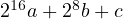

The Linux Kernel Module Programming Guide is a free book; you may reproduce
and/or modify it under the terms of the Open Software License, version
3.0.
This book is distributed in the hope it will be useful, but without any warranty,
without even the implied warranty of merchantability or fitness for a particular
purpose.
The author encourages wide distribution of this book for personal or commercial
use, provided the above copyright notice remains intact and the method adheres to
the provisions of the Open Software License. In summary, you may copy and
distribute this book free of charge or for a profit. No explicit permission is required
from the author for reproduction of this book in any medium, physical or
electronic.
Derivative works and translations of this document must be placed under the
Open Software License, and the original copyright notice must remain intact. If you
have contributed new material to this book, you must make the material and source
code available for your revisions. Please make revisions and updates available directly
to the document maintainer, Peter Jay Salzman <p@dirac.org>. This will allow
for the merging of updates and provide consistent revisions to the Linux
community.
If you publish or distribute this book commercially, donations, royalties, and/or
printed copies are greatly appreciated by the author and the Linux Documentation
Project (LDP). Contributing in this way shows your support for free software and
the LDP. If you have questions or comments, please contact the address
above.
0.1.1 Authorship
The Linux Kernel Module Programming Guide was originally written for the 2.2
kernels by Ori Pomerantz. Eventually, Ori no longer had time to maintain the
document. After all, the Linux kernel is a fast moving target. Peter Jay Salzman took
over maintenance and updated it for the 2.4 kernels. Eventually, Peter no longer had
time to follow developments with the 2.6 kernel, so Michael Burian became a
co-maintainer to update the document for the 2.6 kernels. Bob Mottram updated the
examples for 3.8+ kernels. Jim Huang upgraded to recent kernel versions (v5.x) and
revise LaTeX scripts.
0.1.2 Acknowledgements
The following people have contributed corrections or good suggestions: Ignacio
Martin, David Porter, Daniele Paolo Scarpazza, Dimo Velev, Francois Audeon, Horst
Schirmeier, and Roman Lakeev.
0.1.3 What Is A Kernel Module?
So, you want to write a kernel module. You know C, you have written a few normal
programs to run as processes, and now you want to get to where the real action is, to
where a single wild pointer can wipe out your file system and a core dump means a
reboot.
What exactly is a kernel module? Modules are pieces of code that can be loaded
and unloaded into the kernel upon demand. They extend the functionality of the
kernel without the need to reboot the system. For example, one type of module is the
device driver, which allows the kernel to access hardware connected to the system.
Without modules, we would have to build monolithic kernels and add new
functionality directly into the kernel image. Besides having larger kernels, this has
the disadvantage of requiring us to rebuild and reboot the kernel every time we want
new functionality.
0.1.4 Kernel module package
Linux distributions provide the commands modprobe, insmod and depmod within a
package.
On Ubuntu/Debian:
1sudo apt-get install build-essential kmod
On Arch Linux:
1sudo pacman -S gcc kmod
0.1.5 What Modules are in my Kernel?
To discover what modules are already loaded within your current kernel use the
command lsmod.
1sudo lsmod
Modules are stored within the file /proc/modules, so you can also see them with:
1sudo cat /proc/modules
This can be a long list, and you might prefer to search for something particular.
To search for the fat module:
1sudo lsmod | grep fat
0.1.6 Do I need to download and compile the kernel?
For the purposes of following this guide you don’t necessarily need to do that.
However, it would be wise to run the examples within a test distribution running
on a virtual machine in order to avoid any possibility of messing up your
system.
0.1.7 Before We Begin
Before we delve into code, there are a few issues we need to cover. Everyone’s system
is different and everyone has their own groove. Getting your first "hello world"
program to compile and load correctly can sometimes be a trick. Rest assured, after
you get over the initial hurdle of doing it for the first time, it will be smooth sailing
thereafter.
Modversioning. A module compiled for one kernel will not load if you boot
a different kernel unless you enable CONFIG_MODVERSIONS in the kernel.
We will not go into module versioning until later in this guide. Until
we cover modversions, the examples in the guide may not work if you
are running a kernel with modversioning turned on. However, most stock
Linux distribution kernels come with it turned on. If you are having trouble
loading the modules because of versioning errors, compile a kernel with
modversioning turned off.
Using X Window System. It is highly recommended that you extract,
compile and load all the examples this guide discusses. It is also highly
recommended you do this from a console. You should not be working on
this stuff in X Window System.
Modules can not print to the screen like printf() can, but they can log
information and warnings, which ends up being printed on your screen, but
only on a console. If you insmod a module from an xterm, the information
and warnings will be logged, but only to your systemd journal. You will
not see it unless you look through your journalctl. See 0.4 for details.
To have immediate access to this information, do all your work from the
console.
0.2 Headers
Before you can build anything you’ll need to install the header files for your
kernel.
All the examples from this document are available within the examples subdirectory.
If there are any compile errors then you might have a more recent kernel version
or need to install the corresponding kernel header files.
0.4 Hello World
0.4.1 The Simplest Module
Most people learning programming start out with some sort of "hello world"
example. I don’t know what happens to people who break with this tradition, but I
think it is safer not to find out. We will start with a series of hello world
programs that demonstrate the different aspects of the basics of writing a kernel
module.
If all goes smoothly you should then find that you have a compiled hello-1.ko
module. You can find info on it with the command:
1sudo modinfo hello-1.ko
At this point the command:
1sudo lsmod | grep hello
should return nothing. You can try loading your shiny new module with:
1sudo insmod hello-1.ko
The dash character will get converted to an underscore, so when you again try:
1sudo lsmod | grep hello
you should now see your loaded module. It can be removed again with:
1sudo rmmod hello_1
Notice that the dash was replaced by an underscore. To see what just happened in
the logs:
1journalctl --since "1 hour ago" | grep kernel
You now know the basics of creating, compiling, installing and removing modules.
Now for more of a description of how this module works.
Kernel modules must have at least two functions: a "start" (initialization)
function called init_module() which is called when the module is insmoded into
the kernel, and an "end" (cleanup) function called cleanup_module() which is
called just before it is removed from the kernel. Actually, things have changed
starting with kernel 2.3.13. You can now use whatever name you like for the start and
end functions of a module, and you will learn how to do this in Section 2.3.
In fact, the new method is the preferred method. However, many people
still use init_module() and cleanup_module() for their start and end
functions.
Typically, init_module() either registers a handler for something with the kernel,
or it replaces one of the kernel functions with its own code (usually code to do
something and then call the original function). The cleanup_module() function is
supposed to undo whatever init_module() did, so the module can be unloaded
safely.
Lastly, every kernel module needs to include linux/module.h. We needed to
include linux/kernel.h only for the macro expansion for the pr_alert() log level,
which you’ll learn about in Section 2.1.1.
A point about coding style. Another thing which may not be immediately
obvious to anyone getting started with kernel programming is that
indentation within your code should be using tabs and not spaces. It is
one of the coding conventions of the kernel. You may not like it, but you’ll
need to get used to it if you ever submit a patch upstream.
Introducing print macros. In the beginning there was printk, usually
followed by a priority such as KERN_INFO or KERN_DEBUG. More recently
this can also be expressed in abbreviated form using a set of print macros,
such as pr_info and pr_debug. This just saves some mindless keyboard
bashing and looks a bit neater. They can be found within linux/printk.h.
Take time to read through the available priority macros.
About Compiling. Kernel modules need to be compiled a bit differently
from regular userspace apps. Former kernel versions required us to
care much about these settings, which are usually stored in Makefiles.
Although hierarchically organized, many redundant settings accumulated
in sublevel Makefiles and made them large and rather difficult to maintain.
Fortunately, there is a new way of doing these things, called kbuild, and
the build process for external loadable modules is now fully integrated into
the standard kernel build mechanism. To learn more on how to compile
modules which are not part of the official kernel (such as all the examples
you will find in this guide), see file Documentation/kbuild/modules.rst.
Additional details about Makefiles for kernel modules are available in
Documentation/kbuild/makefiles.rst. Be sure to read this and the
related files before starting to hack Makefiles. It will probably save you
lots of work.
Here is another exercise for the reader. See that comment above
the return statement in init_module()? Change the return
value to something negative, recompile and load the module
again. What happens?
0.4.2 Hello and Goodbye
In early kernel versions you had to use the init_module and cleanup_module
functions, as in the first hello world example, but these days you can name those
anything you want by using the module_init and module_exit macros.
These macros are defined in linux/init.h. The only requirement is that
your init and cleanup functions must be defined before calling the those
macros, otherwise you’ll get compilation errors. Here is an example of this
technique:
1/*2 * hello-2.c - Demonstrating the module_init() and module_exit() macros.3 * This is preferred over using init_module() and cleanup_module().4 */5#include<linux/init.h> /* Needed for the macros */6#include<linux/kernel.h> /* Needed for KERN_INFO */7#include<linux/module.h> /* Needed by all modules */8
9staticint __init hello_2_init(void)
10{
11 pr_info("Hello, world 2\n");
12return 0;
13}
14
15staticvoid __exit hello_2_exit(void)
16{
17 pr_info("Goodbye, world 2\n");
18}
19
20module_init(hello_2_init);
21module_exit(hello_2_exit);
22
23MODULE_LICENSE("GPL");
So now we have two real kernel modules under our belt. Adding another module
is as simple as this:
Now have a look at linux/drivers/char/Makefile for a real world example. As
you can see, some things get hardwired into the kernel (obj-y) but where are all
those obj-m gone? Those familiar with shell scripts will easily be able to spot them.
For those not, the obj-$(CONFIG_FOO) entries you see everywhere expand into obj-y
or obj-m, depending on whether the CONFIG_FOO variable has been set to y or m.
While we are at it, those were exactly the kind of variables that you have set in the
linux/.config file, the last time when you said make menuconfig or something like
that.
0.4.3 The __init and __exit Macros
This demonstrates a feature of kernel 2.2 and later. Notice the change in the
definitions of the init and cleanup functions. The __init macro causes the init
function to be discarded and its memory freed once the init function finishes for
built-in drivers, but not loadable modules. If you think about when the init function
is invoked, this makes perfect sense.
There is also an __initdata which works similarly to __init but for init
variables rather than functions.
The __exit macro causes the omission of the function when the module is
built into the kernel, and like __init, has no effect for loadable modules.
Again, if you consider when the cleanup function runs, this makes complete
sense; built-in drivers do not need a cleanup function, while loadable modules
do.
These macros are defined in linux/init.h and serve to free up kernel memory.
When you boot your kernel and see something like Freeing unused kernel memory:
236k freed, this is precisely what the kernel is freeing.
1/*2 * hello-3.c - Illustrating the __init, __initdata and __exit macros.3 */4#include<linux/init.h> /* Needed for the macros */5#include<linux/kernel.h> /* Needed for KERN_INFO */6#include<linux/module.h> /* Needed by all modules */7
8staticint hello3_data __initdata = 3;
9
10staticint __init hello_3_init(void)
11{
12 pr_info("Hello, world %d\n", hello3_data);
13return 0;
14}
15
16staticvoid __exit hello_3_exit(void)
17{
18 pr_info("Goodbye, world 3\n");
19}
20
21module_init(hello_3_init);
22module_exit(hello_3_exit);
23
24MODULE_LICENSE("GPL");
0.4.4 Licensing and Module Documentation
Honestly, who loads or even cares about proprietary modules? If you do then you
might have seen something like this:
You can use a few macros to indicate the license for your module. Some examples
are "GPL", "GPL v2", "GPL and additional rights", "Dual BSD/GPL", "Dual
MIT/GPL", "Dual MPL/GPL" and "Proprietary". They are defined within
linux/module.h.
To reference what license you’re using a macro is available called
MODULE_LICENSE. This and a few other macros describing the module are
illustrated in the below example.
1/*2 * hello-4.c - Demonstrates module documentation.3 */4#include<linux/init.h> /* Needed for the macros */5#include<linux/kernel.h> /* Needed for KERN_INFO */6#include<linux/module.h> /* Needed by all modules */7
8MODULE_LICENSE("GPL");
9MODULE_AUTHOR("LKMPG");
10MODULE_DESCRIPTION("A sample driver");
11MODULE_SUPPORTED_DEVICE("testdevice");
12
13staticint __init init_hello_4(void)
14{
15 pr_info("Hello, world 4\n");
16return 0;
17}
18
19staticvoid __exit cleanup_hello_4(void)
20{
21 pr_info("Goodbye, world 4\n");
22}
23
24module_init(init_hello_4);
25module_exit(cleanup_hello_4);
0.4.5 Passing Command Line Arguments to a Module
Modules can take command line arguments, but not with the argc/argv you might be
used to.
To allow arguments to be passed to your module, declare the variables that
will take the values of the command line arguments as global and then use
the module_param() macro, (defined in linux/moduleparam.h) to set the
mechanism up. At runtime, insmod will fill the variables with any command line
arguments that are given, like insmod ./mymodule.ko myvariable=5. The
variable declarations and macros should be placed at the beginning of the
module for clarity. The example code should clear up my admittedly lousy
explanation.
The module_param() macro takes 3 arguments: the name of the variable, its type
and permissions for the corresponding file in sysfs. Integer types can be signed
as usual or unsigned. If you’d like to use arrays of integers or strings see
module_param_array() and module_param_string().
1int myint = 3;
2module_param(myint, int, 0);
Arrays are supported too, but things are a bit different now than they were in the
olden days. To keep track of the number of parameters you need to pass a
pointer to a count variable as third parameter. At your option, you could
also ignore the count and pass NULL instead. We show both possibilities
here:
1int myintarray[2];
2module_param_array(myintarray, int, NULL, 0); /* not interested in count */3
4short myshortarray[4];
5int count;
6module_param_array(myshortarray, short, &count, 0); /* put count into "count" variable */
A good use for this is to have the module variable’s default values set, like an port
or IO address. If the variables contain the default values, then perform autodetection
(explained elsewhere). Otherwise, keep the current value. This will be made clear
later on.
Lastly, there’s a macro function, MODULE_PARM_DESC(), that is used to
document arguments that the module can take. It takes two parameters: a variable
name and a free form string describing that variable.
1/*2 * hello-5.c - Demonstrates command line argument passing to a module.3 */4#include<linux/init.h>5#include<linux/kernel.h>6#include<linux/module.h>7#include<linux/moduleparam.h>8#include<linux/stat.h>9
10MODULE_LICENSE("GPL");
11
12staticshortint myshort = 1;
13staticint myint = 420;
14staticlongint mylong = 9999;
15staticchar *mystring = "blah";
16staticint myintArray[2] = {-1, -1};
17staticint arr_argc = 0;
18
19/*20 * module_param(foo, int, 0000)21 * The first param is the parameters name22 * The second param is it's data type23 * The final argument is the permissions bits,24 * for exposing parameters in sysfs (if non-zero) at a later stage.25 */26
27module_param(myshort, short, S_IRUSR | S_IWUSR | S_IRGRP | S_IWGRP);
28MODULE_PARM_DESC(myshort, "A short integer");
29module_param(myint, int, S_IRUSR | S_IWUSR | S_IRGRP | S_IROTH);
30MODULE_PARM_DESC(myint, "An integer");
31module_param(mylong, long, S_IRUSR);
32MODULE_PARM_DESC(mylong, "A long integer");
33module_param(mystring, charp, 0000);
34MODULE_PARM_DESC(mystring, "A character string");
35
36/*37 * module_param_array(name, type, num, perm);38 * The first param is the parameter's (in this case the array's) name39 * The second param is the data type of the elements of the array40 * The third argument is a pointer to the variable that will store the number41 * of elements of the array initialized by the user at module loading time42 * The fourth argument is the permission bits43 */44module_param_array(myintArray, int, &arr_argc, 0000);
45MODULE_PARM_DESC(myintArray, "An array of integers");
46
47staticint __init hello_5_init(void)
48{
49int i;
50 pr_info("Hello, world 5\n=============\n");
51 pr_info("myshort is a short integer: %hd\n", myshort);
52 pr_info("myint is an integer: %d\n", myint);
53 pr_info("mylong is a long integer: %ld\n", mylong);
54 pr_info("mystring is a string: %s\n", mystring);
55
56for (i = 0; i < (sizeof myintArray / sizeof(int)); i++)
57 pr_info("myintArray[%d] = %d\n", i, myintArray[i]);
58
59 pr_info("got %d arguments for myintArray.\n", arr_argc);
60return 0;
61}
62
63staticvoid __exit hello_5_exit(void)
64{
65 pr_info("Goodbye, world 5\n");
66}
67
68module_init(hello_5_init);
69module_exit(hello_5_exit);
I would recommend playing around with this code:
1$ sudo insmod hello-5.ko mystring="bebop" myintArray=-1
2myshort is a short integer: 1
3myint is an integer: 20
4mylong is a long integer: 9999
5mystring is a string: bebop
6myintArray is -1 and 420
7
8$ sudo rmmod hello-5
9Goodbye, world 5
10
11$ sudo insmod hello-5.ko mystring="supercalifragilisticexpialidocious" myintArray=-1,-1
12myshort is a short integer: 1
13myint is an integer: 20
14mylong is a long integer: 9999
15mystring is a string: supercalifragilisticexpialidocious
16myintArray is -1 and -1
17
18$ sudo rmmod hello-5
19Goodbye, world 5
20
21$ sudo insmod hello-5.ko mylong=hello
22hello-5.o: invalid argument syntax for mylong: 'h'
0.4.6 Modules Spanning Multiple Files
Sometimes it makes sense to divide a kernel module between several source
files.
Here is an example of such a kernel module.
1/*2 * start.c - Illustration of multi filed modules3 */4
5#include<linux/kernel.h> /* We're doing kernel work */6#include<linux/module.h> /* Specifically, a module */7
8int init_module(void)
9{
10 pr_info("Hello, world - this is the kernel speaking\n");
11return 0;
12}
13
14MODULE_LICENSE("GPL");
The next file:
1/*2 * stop.c - Illustration of multi filed modules3 */4
5#include<linux/kernel.h> /* We're doing kernel work */6#include<linux/module.h> /* Specifically, a module */7
8void cleanup_module()
9{
10 pr_info("Short is the life of a kernel module\n");
11}
12
13MODULE_LICENSE("GPL");
This is the complete makefile for all the examples we have seen so far. The first
five lines are nothing special, but for the last example we will need two lines. First we
invent an object name for our combined module, second we tell make what object
files are part of that module.
0.4.7 Building modules for a precompiled kernel
Obviously, we strongly suggest you to recompile your kernel, so that you can enable
a number of useful debugging features, such as forced module unloading
(MODULE_FORCE_UNLOAD): when this option is enabled, you can force the
kernel to unload a module even when it believes it is unsafe, via a sudo rmmod -f
module command. This option can save you a lot of time and a number of reboots
during the development of a module. If you do not want to recompile your kernel
then you should consider running the examples within a test distribution on a virtual
machine. If you mess anything up then you can easily reboot or restore the virtual
machine (VM).
There are a number of cases in which you may want to load your module into a
precompiled running kernel, such as the ones shipped with common Linux
distributions, or a kernel you have compiled in the past. In certain circumstances you
could require to compile and insert a module into a running kernel which you are not
allowed to recompile, or on a machine that you prefer not to reboot. If you
can’t think of a case that will force you to use modules for a precompiled
kernel you might want to skip this and treat the rest of this chapter as a big
footnote.
Now, if you just install a kernel source tree, use it to compile your kernel module
and you try to insert your module into the kernel, in most cases you would obtain an
error as follows:
insmod: error inserting 'poet_atkm.ko': -1 Invalid module format
Less cryptical information are logged to the systemd journal:
Jun 4 22:07:54 localhost kernel: poet_atkm: version magic '2.6.5-1.358custom 686
REGPARM 4KSTACKS gcc-3.3' should be '2.6.5-1.358 686 REGPARM 4KSTACKS gcc-3.3'
In other words, your kernel refuses to accept your module because version strings
(more precisely, version magics) do not match. Incidentally, version magics are stored
in the module object in the form of a static string, starting with vermagic:. Version
data are inserted in your module when it is linked against the init/vermagic.o file.
To inspect version magics and other strings stored in a given module, issue the
modinfo module.ko command:
To overcome this problem we could resort to the –force-vermagic option, but
this solution is potentially unsafe, and unquestionably inacceptable in production
modules. Consequently, we want to compile our module in an environment which was
identical to the one in which our precompiled kernel was built. How to do this, is the
subject of the remainder of this chapter.
First of all, make sure that a kernel source tree is available, having exactly the
same version as your current kernel. Then, find the configuration file which was used
to compile your precompiled kernel. Usually, this is available in your current boot
directory, under a name like config-2.6.x. You may just want to copy it to your kernel
source tree: cp /boot/config-`uname -r` .config.
Let’s focus again on the previous error message: a closer look at the version magic
strings suggests that, even with two configuration files which are exactly the same, a
slight difference in the version magic could be possible, and it is sufficient to prevent
insertion of the module into the kernel. That slight difference, namely the custom
string which appears in the module’s version magic and not in the kernel’s one,
is due to a modification with respect to the original, in the makefile that
some distribution include. Then, examine your /usr/src/linux/Makefile,
and make sure that the specified version information matches exactly the
one used for your current kernel. For example, you makefile could start as
follows:
In this case, you need to restore the value of symbol EXTRAVERSION to
-rc2. We suggest to keep a backup copy of the makefile used to compile
your kernel available in /lib/modules/5.14.0-rc2/build. A simple cp
/lib/modules/‘uname-r‘/build/Makefile /usr/src/linux-‘uname -r‘ should
suffice. Additionally, if you already started a kernel build with the previous (wrong)
Makefile, you should also rerun make, or directly modify symbol UTS_RELEASE in
file /usr/src/linux-5.14.0/include/linux/version.h according to contents of file
/lib/modules/5.14.0/build/include/linux/version.h, or overwrite the latter
with the first.
Now, please run make to update configuration and version headers and
objects:
If you do not desire to actually compile the kernel, you can interrupt the build
process (CTRL-C) just after the SPLIT line, because at that time, the files you need
will be are ready. Now you can turn back to the directory of your module and
compile it: It will be built exactly according to your current kernel settings, and it
will load into it without any errors.
0.5 Preliminaries
0.5.1 How modules begin and end
A program usually begins with a main() function, executes a bunch of instructions
and terminates upon completion of those instructions. Kernel modules work a bit
differently. A module always begin with either the init_module or the function you
specify with module_init call. This is the entry function for modules; it tells the
kernel what functionality the module provides and sets up the kernel to run the
module’s functions when they are needed. Once it does this, entry function returns
and the module does nothing until the kernel wants to do something with the code
that the module provides.
All modules end by calling either cleanup_module or the function you specify
with the module_exit call. This is the exit function for modules; it undoes
whatever entry function did. It unregisters the functionality that the entry function
registered.
Every module must have an entry function and an exit function. Since there’s
more than one way to specify entry and exit functions, I’ll try my best to use the
terms “entry function” and “exit function”, but if I slip and simply refer
to them as init_module and cleanup_module, I think you’ll know what I
mean.
0.5.2 Functions available to modules
Programmers use functions they do not define all the time. A prime example of
this is printf(). You use these library functions which are provided by the
standard C library, libc. The definitions for these functions do not actually
enter your program until the linking stage, which insures that the code (for
printf() for example) is available, and fixes the call instruction to point to that
code.
Kernel modules are different here, too. In the hello world example, you might
have noticed that we used a function, pr_info() but did not include a standard I/O
library. That is because modules are object files whose symbols get resolved upon
insmod’ing. The definition for the symbols comes from the kernel itself; the only
external functions you can use are the ones provided by the kernel. If you’re
curious about what symbols have been exported by your kernel, take a look at
/proc/kallsyms.
One point to keep in mind is the difference between library functions
and system calls. Library functions are higher level, run completely in user
space and provide a more convenient interface for the programmer to the
functions that do the real work — system calls. System calls run in kernel
mode on the user’s behalf and are provided by the kernel itself. The library
function printf() may look like a very general printing function, but all it
really does is format the data into strings and write the string data using
the low-level system call write(), which then sends the data to standard
output.
Would you like to see what system calls are made by printf()? It is easy! Compile
the following program:
with gcc -Wall -o hello hello.c. Run the exectable with strace ./hello. Are
you impressed? Every line you see corresponds to a system call. strace is a handy
program that gives you details about what system calls a program is making,
including which call is made, what its arguments are and what it returns. It is an
invaluable tool for figuring out things like what files a program is trying to access.
Towards the end, you will see a line which looks like write(1, "hello", 5hello).
There it is. The face behind the printf() mask. You may not be familiar with write,
since most people use library functions for file I/O (like fopen, fputs, fclose). If that
is the case, try looking at man 2 write. The 2nd man section is devoted
to system calls (like kill() and read()). The 3rd man section is devoted to
library calls, which you would probably be more familiar with (like cosh() and
random()).
You can even write modules to replace the kernel’s system calls, which we will do
shortly. Crackers often make use of this sort of thing for backdoors or trojans, but
you can write your own modules to do more benign things, like have the kernel
write Tee hee, that tickles! everytime someone tries to delete a file on your
system.
0.5.3 User Space vs Kernel Space
A kernel is all about access to resources, whether the resource in question happens to
be a video card, a hard drive or even memory. Programs often compete for the same
resource. As I just saved this document, updatedb started updating the locate
database. My vim session and updatedb are both using the hard drive concurrently.
The kernel needs to keep things orderly, and not give users access to resources
whenever they feel like it. To this end, a CPU can run in different modes. Each mode
gives a different level of freedom to do what you want on the system. The Intel 80386
architecture had 4 of these modes, which were called rings. Unix uses only
two rings; the highest ring (ring 0, also known as “supervisor mode” where
everything is allowed to happen) and the lowest ring, which is called “user
mode”.
Recall the discussion about library functions vs system calls. Typically, you use a
library function in user mode. The library function calls one or more system calls,
and these system calls execute on the library function’s behalf, but do so in
supervisor mode since they are part of the kernel itself. Once the system call
completes its task, it returns and execution gets transfered back to user
mode.
0.5.4 Name Space
When you write a small C program, you use variables which are convenient and make
sense to the reader. If, on the other hand, you are writing routines which will be part
of a bigger problem, any global variables you have are part of a community of other
peoples’ global variables; some of the variable names can clash. When a program has
lots of global variables which aren’t meaningful enough to be distinguished, you get
namespace pollution. In large projects, effort must be made to remember reserved
names, and to find ways to develop a scheme for naming unique variable names and
symbols.
When writing kernel code, even the smallest module will be linked against the
entire kernel, so this is definitely an issue. The best way to deal with this is to declare
all your variables as static and to use a well-defined prefix for your symbols. By
convention, all kernel prefixes are lowercase. If you do not want to declare everything
as static, another option is to declare a symbol table and register it with a kernel. We
will get to this later.
The file /proc/kallsyms holds all the symbols that the kernel knows about and
which are therefore accessible to your modules since they share the kernel’s
codespace.
0.5.5 Code space
Memory management is a very complicated subject and the majority of O’Reilly’s
"Understanding The Linux Kernel" exclusively covers memory management!
We are not setting out to be experts on memory managements, but we do
need to know a couple of facts to even begin worrying about writing real
modules.
If you have not thought about what a segfault really means, you may be surprised
to hear that pointers do not actually point to memory locations. Not real
ones, anyway. When a process is created, the kernel sets aside a portion of
real physical memory and hands it to the process to use for its executing
code, variables, stack, heap and other things which a computer scientist
would know about. This memory begins with 0x00000000 and extends up to
whatever it needs to be. Since the memory space for any two processes do not
overlap, every process that can access a memory address, say 0xbffff978, would
be accessing a different location in real physical memory! The processes
would be accessing an index named 0xbffff978 which points to some kind of
offset into the region of memory set aside for that particular process. For
the most part, a process like our Hello, World program can’t access the
space of another process, although there are ways which we will talk about
later.
The kernel has its own space of memory as well. Since a module is code which
can be dynamically inserted and removed in the kernel (as opposed to a
semi-autonomous object), it shares the kernel’s codespace rather than having its own.
Therefore, if your module segfaults, the kernel segfaults. And if you start writing
over data because of an off-by-one error, then you’re trampling on kernel
data (or code). This is even worse than it sounds, so try your best to be
careful.
By the way, I would like to point out that the above discussion is true for any
operating system which uses a monolithic kernel. This is not quite the same thing as
"building all your modules into the kernel", although the idea is the same. There are
things called microkernels which have modules which get their own codespace. The
GNU Hurd and the Zircon kernel of Google Fuchsia are two examples of a
microkernel.
0.5.6 Device Drivers
One class of module is the device driver, which provides functionality for hardware
like a serial port. On Unix, each piece of hardware is represented by a file located in
/dev named a device file which provides the means to communicate with the
hardware. The device driver provides the communication on behalf of a
user program. So the es1370.ko sound card device driver might connect the
/dev/sound device file to the Ensoniq IS1370 sound card. A userspace program like
mp3blaster can use /dev/sound without ever knowing what kind of sound card is
installed.
Let’s look at some device files. Here are device files which represent the first three
partitions on the primary master IDE hard drive:
$ ls -l /dev/hda[1-3]
brw-rw---- 1 root disk 3, 1 Jul 5 2000 /dev/hda1
brw-rw---- 1 root disk 3, 2 Jul 5 2000 /dev/hda2
brw-rw---- 1 root disk 3, 3 Jul 5 2000 /dev/hda3
Notice the column of numbers separated by a comma. The first number is called
the device’s major number. The second number is the minor number. The major
number tells you which driver is used to access the hardware. Each driver is assigned
a unique major number; all device files with the same major number are controlled
by the same driver. All the above major numbers are 3, because they’re all controlled
by the same driver.
The minor number is used by the driver to distinguish between the various
hardware it controls. Returning to the example above, although all three devices are
handled by the same driver they have unique minor numbers because the driver sees
them as being different pieces of hardware.
Devices are divided into two types: character devices and block devices. The
difference is that block devices have a buffer for requests, so they can choose the best
order in which to respond to the requests. This is important in the case of storage
devices, where it is faster to read or write sectors which are close to each other,
rather than those which are further apart. Another difference is that block devices
can only accept input and return output in blocks (whose size can vary according to
the device), whereas character devices are allowed to use as many or as few bytes
as they like. Most devices in the world are character, because they don’t
need this type of buffering, and they don’t operate with a fixed block size.
You can tell whether a device file is for a block device or a character device
by looking at the first character in the output of ls -l. If it is ‘b’ then it
is a block device, and if it is ‘c’ then it is a character device. The devices
you see above are block devices. Here are some character devices (the serial
ports):
If you want to see which major numbers have been assigned, you can look at
Documentation/devices.txt.
When the system was installed, all of those device files were created by the
mknod command. To create a new char device named ‘coffee’ with major/minor
number 12 and 2, simply do mknod /dev/coffee c 12 2. You do not have to put your
device files into /dev, but it is done by convention. Linus put his device files in /dev,
and so should you. However, when creating a device file for testing purposes, it is
probably OK to place it in your working directory where you compile the kernel
module. Just be sure to put it in the right place when you’re done writing the device
driver.
I would like to make a few last points which are implicit from the above
discussion, but I would like to make them explicit just in case. When a device file is
accessed, the kernel uses the major number of the file to determine which driver
should be used to handle the access. This means that the kernel doesn’t really need
to use or even know about the minor number. The driver itself is the only thing that
cares about the minor number. It uses the minor number to distinguish between
different pieces of hardware.
By the way, when I say "hardware", I mean something a bit more abstract
than a PCI card that you can hold in your hand. Look at these two device
files:
$ ls -l /dev/sda /dev/sdb
brw-rw---- 1 root disk 8, 0 Jan 3 09:02 /dev/sda
brw-rw---- 1 root disk 8, 16 Jan 3 09:02 /dev/sdb
By now you can look at these two device files and know instantly that they are
block devices and are handled by same driver (block major 8). Sometimes two device
files with the same major but different minor number can actually represent the same
piece of physical hardware. So just be aware that the word “hardware” in our
discussion can mean something very abstract.
0.6 Character Device drivers
0.6.1 The proc_ops Structure
The proc_ops structure is defined in /usr/include/linux/fs.h, and holds pointers
to functions defined by the driver that perform various operations on the device.
Each field of the structure corresponds to the address of some function defined by the
driver to handle a requested operation.
For example, every character driver needs to define a function that reads from the
device. The proc_ops structure holds the address of the module’s function that
performs that operation. Here is what the definition looks like for kernel
3.0:
Some operations are not implemented by a driver. For example, a driver that
handles a video card will not need to read from a directory structure. The
corresponding entries in the proc_ops structure should be set to NULL.
There is a gcc extension that makes assigning to this structure more convenient.
You will see it in modern drivers, and may catch you by surprise. This is what the
new way of assigning to the structure looks like:
However, there is also a C99 way of assigning to elements of a structure,
designated initializers, and this is definitely preferred over using the GNU extension.
You should use this syntax in case someone wants to port your driver. It will help
with compatibility:
The meaning is clear, and you should be aware that any member of the
structure which you do not explicitly assign will be initialized to NULL by
gcc.
An instance of struct proc_ops containing pointers to functions that are used to
implement read, write, open, … syscalls is commonly named fops.
0.6.2 The file structure
Each device is represented in the kernel by a file structure, which is defined in
linux/fs.h. Be aware that a file is a kernel level structure and never appears in a
user space program. It is not the same thing as a FILE, which is defined by glibc and
would never appear in a kernel space function. Also, its name is a bit misleading; it
represents an abstract open ‘file’, not a file on a disk, which is represented by a
structure named inode.
An instance of struct file is commonly named filp. You’ll also see it refered to as
struct file file. Resist the temptation.
Go ahead and look at the definition of file. Most of the entries you see, like struct
dentry are not used by device drivers, and you can ignore them. This is because
drivers do not fill file directly; they only use structures contained in file which are
created elsewhere.
0.6.3 Registering A Device
As discussed earlier, char devices are accessed through device files, usually located in
/dev. This is by convention. When writing a driver, it is OK to put the
device file in your current directory. Just make sure you place it in /dev for a
production driver. The major number tells you which driver handles which
device file. The minor number is used only by the driver itself to differentiate
which device it is operating on, just in case the driver handles more than one
device.
Adding a driver to your system means registering it with the kernel.
This is synonymous with assigning it a major number during the module’s
initialization. You do this by using the register_chrdev function, defined by
linux/fs.h.
where unsigned int major is the major number you want to request, const char
*name is the name of the device as it will appear in /proc/devices and struct
proc_ops *fops is a pointer to the proc_ops table for your driver. A negative return
value means the registration failed. Note that we didn’t pass the minor number to
register_chrdev. That is because the kernel doesn’t care about the minor number;
only our driver uses it.
Now the question is, how do you get a major number without hijacking one that’s
already in use? The easiest way would be to look through Documentation
/devices.txt and pick an unused one. That is a bad way of doing things
because you will never be sure if the number you picked will be assigned later.
The answer is that you can ask the kernel to assign you a dynamic major
number.
If you pass a major number of 0 to register_chrdev, the return value will be the
dynamically allocated major number. The downside is that you ca not make a device
file in advance, since you don’t know what the major number will be. There are a
couple of ways to do this. First, the driver itself can print the newly assigned number
and we can make the device file by hand. Second, the newly registered device will
have an entry in /proc/devices, and we can either make the device file by hand or
write a shell script to read the file in and make the device file. The third method is
we can have our driver make the the device file using the device_create
function after a successful registration and device_destroy during the call to
cleanup_module.
0.6.4 Unregistering A Device
We can not allow the kernel module to be rmmod’ed whenever root feels like it. If the
device file is opened by a process and then we remove the kernel module, using the
file would cause a call to the memory location where the appropriate function
(read/write) used to be. If we are lucky, no other code was loaded there, and we’ll get
an ugly error message. If we are unlucky, another kernel module was loaded into the
same location, which means a jump into the middle of another function within the
kernel. The results of this would be impossible to predict, but they can not be very
positive.
Normally, when you don’t want to allow something, you return an error code
(a negative number) from the function which is supposed to do it. With
cleanup_module that’s impossible because it is a void function. However, there is a
counter which keeps track of how many processes are using your module. You can see
what its value is by looking at the 3rd field of /proc/modules. If this number isn’t
zero, rmmod will fail. Note that you don’t have to check the counter from within
cleanup_module because the check will be performed for you by the system call
sys_delete_module, defined in linux/module.c. You should not use this counter
directly, but there are functions defined in linux/module.h which let you increase,
decrease and display this counter:
try_module_get(THIS_MODULE): Increment the use count.
module_put(THIS_MODULE): Decrement the use count.
It is important to keep the counter accurate; if you ever do lose track of the
correct usage count, you will never be able to unload the module; it’s now reboot
time, boys and girls. This is bound to happen to you sooner or later during a
module’s development.
0.6.5 chardev.c
The next code sample creates a char driver named chardev. You can cat its device
file.
1cat /proc/devices
(or open the file with a program) and the driver will put the number of times the
device file has been read from into the file. We do not support writing to the file
(like echo "hi" > /dev/hello), but catch these attempts and tell the user
that the operation is not supported. Don’t worry if you don’t see what we
do with the data we read into the buffer; we don’t do much with it. We
simply read in the data and print a message acknowledging that we received
it.
1/*2 * chardev.c: Creates a read-only char device that says how many times3 * you've read from the dev file4 */5
6#include<linux/cdev.h>7#include<linux/delay.h>8#include<linux/device.h>9#include<linux/fs.h>10#include<linux/init.h>11#include<linux/irq.h>12#include<linux/kernel.h>13#include<linux/module.h>14#include<linux/poll.h>15
16/*17 * Prototypes - this would normally go in a .h file18 */19int init_module(void);
20void cleanup_module(void);
21staticint device_open(struct inode *, struct file *);
22staticint device_release(struct inode *, struct file *);
23staticssize_t device_read(struct file *, char *, size_t, loff_t *);
24staticssize_t device_write(struct file *, constchar *, size_t, loff_t *);
25
26#define SUCCESS 027#define DEVICE_NAME "chardev" /* Dev name as it appears in /proc/devices */28#define BUF_LEN 80 /* Max length of the message from the device */29
30/*31 * Global variables are declared as static, so are global within the file.32 */33
34staticint Major; /* Major number assigned to our device driver */35staticint Device_Open = 0; /* Is device open?36 * Used to prevent multiple access to device */37staticchar msg[BUF_LEN]; /* The msg the device will give when asked */38staticchar *msg_Ptr;
39
40staticstruct class *cls;
41
42staticstruct file_operations chardev_fops = {.read = device_read,
43 .write = device_write,
44 .open = device_open,
45 .release = device_release};
46
47/*48 * This function is called when the module is loaded49 */50int init_module(void)
51{
52 Major = register_chrdev(0, DEVICE_NAME, &chardev_fops);
53
54if (Major < 0) {
55 pr_alert("Registering char device failed with %d\n", Major);
56return Major;
57 }
58
59 pr_info("I was assigned major number %d.\n", Major);
60
61 cls = class_create(THIS_MODULE, DEVICE_NAME);
62 device_create(cls, NULL, MKDEV(Major, 0), NULL, DEVICE_NAME);
63
64 pr_info("Device created on /dev/%s\n", DEVICE_NAME);
65
66return SUCCESS;
67}
68
69/*70 * This function is called when the module is unloaded71 */72void cleanup_module(void)
73{
74 device_destroy(cls, MKDEV(Major, 0));
75 class_destroy(cls);
76
77/*78 * Unregister the device79 */80 unregister_chrdev(Major, DEVICE_NAME);
81}
82
83/*84 * Methods85 */86
87/*88 * Called when a process tries to open the device file, like89 * "sudo cat /dev/chardev"90 */91staticint device_open(struct inode *inode, struct file *file)
92{
93staticint counter = 0;
94
95if (Device_Open)
96return -EBUSY;
97
98 Device_Open++;
99 sprintf(msg, "I already told you %d times Hello world!\n", counter++);
100 msg_Ptr = msg;
101 try_module_get(THIS_MODULE);
102
103return SUCCESS;
104}
105
106/*107 * Called when a process closes the device file.108 */109staticint device_release(struct inode *inode, struct file *file)
110{
111 Device_Open--; /* We're now ready for our next caller */112
113/*114 * Decrement the usage count, or else once you opened the file, you'll115 * never get get rid of the module.116 */117 module_put(THIS_MODULE);
118
119return SUCCESS;
120}
121
122/*123 * Called when a process, which already opened the dev file, attempts to124 * read from it.125 */126staticssize_t device_read(struct file *filp, /* see include/linux/fs.h */127char *buffer, /* buffer to fill with data */128size_t length, /* length of the buffer */129 loff_t *offset)
130{
131/*132 * Number of bytes actually written to the buffer133 */134int bytes_read = 0;
135
136/*137 * If we're at the end of the message,138 * return 0 signifying end of file139 */140if (*msg_Ptr == 0)
141return 0;
142
143/*144 * Actually put the data into the buffer145 */146while (length && *msg_Ptr) {
147/*148 * The buffer is in the user data segment, not the kernel149 * segment so "*" assignment won't work. We have to use150 * put_user which copies data from the kernel data segment to151 * the user data segment.152 */153 put_user(*(msg_Ptr++), buffer++);
154
155 length--;
156 bytes_read++;
157 }
158
159/*160 * Most read functions return the number of bytes put into the buffer161 */162return bytes_read;
163}
164
165/*166 * Called when a process writes to dev file: echo "hi" > /dev/hello167 */168staticssize_t device_write(struct file *filp,
169constchar *buff,
170size_t len,
171 loff_t *off)
172{
173 pr_alert("Sorry, this operation isn't supported.\n");
174return -EINVAL;
175}
176
177MODULE_LICENSE("GPL");
0.6.6 Writing Modules for Multiple Kernel Versions
The system calls, which are the major interface the kernel shows to the processes,
generally stay the same across versions. A new system call may be added, but
usually the old ones will behave exactly like they used to. This is necessary for
backward compatibility – a new kernel version is not supposed to break regular
processes. In most cases, the device files will also remain the same. On the other
hand, the internal interfaces within the kernel can and do change between
versions.
There are differences between different kernel versions, and if you want to support
multiple kernel versions, you will find yourself having to code conditional compilation
directives. The way to do this to compare the macro LINUX_VERSION_CODE to the
macro KERNEL_VERSION. In version a.b.c of the kernel, the value of this macro would
be .
While previous versions of this guide showed how you can write backward
compatible code with such constructs in great detail, we decided to break with this
tradition for the better. People interested in doing such might now use a LKMPG
with a version matching to their kernel.
0.7 The /proc File System
In Linux, there is an additional mechanism for the kernel and kernel modules to send
information to processes — the /proc file system. Originally designed to allow easy
access to information about processes (hence the name), it is now used by every bit
of the kernel which has something interesting to report, such as /proc/modules
which provides the list of modules and /proc/meminfo which stats memory usage
statistics.
The method to use the proc file system is very similar to the one used with device
drivers — a structure is created with all the information needed for the /proc file,
including pointers to any handler functions (in our case there is only one, the
one called when somebody attempts to read from the /proc file). Then,
init_module registers the structure with the kernel and cleanup_module unregisters
it.
Normal file systems are located on a disk, rather than just in memory (which is
where /proc is), and in that case the inode number is a pointer to a disk
location where the file’s index-node (inode for short) is located. The inode
contains information about the file, for example the file’s permissions, together
with a pointer to the disk location or locations where the file’s data can be
found.
Because we don’t get called when the file is opened or closed, there’s nowhere for
us to put try_module_get and try_module_put in this module, and if the
file is opened and then the module is removed, there’s no way to avoid the
consequences.
Here a simple example showing how to use a /proc file. This is the HelloWorld
for the /proc filesystem. There are three parts: create the file proc helloworld
in the function init_module, return a value (and a buffer) when the file
/proc/helloworld is read in the callback function procfile_read, and delete the
file /proc/helloworld in the function cleanup_module.
The /proc/helloworld is created when the module is loaded with the function
proc_create. The return value is a struct proc_dir_entry , and it will be used
to configure the file /proc/helloworld (for example, the owner of this file). A null
return value means that the creation has failed.
Each time, everytime the file /proc/helloworld is read, the function
procfile_read is called. Two parameters of this function are very important: the
buffer (the first parameter) and the offset (the third one). The content of the
buffer will be returned to the application which read it (for example the
cat command). The offset is the current position in the file. If the return
value of the function is not null, then this function is called again. So be
careful with this function, if it never returns zero, the read function is called
endlessly.
We have seen a very simple example for a /proc file where we only read the
file /proc/helloworld. It is also possible to write in a /proc file. It works
the same way as read, a function is called when the /proc file is written.
But there is a little difference with read, data comes from user, so you have
to import data from user space to kernel space (with copy_from_user or
get_user)
The reason for copy_from_user or get_user is that Linux memory (on Intel
architecture, it may be different under some other processors) is segmented. This
means that a pointer, by itself, does not reference a unique location in memory, only
a location in a memory segment, and you need to know which memory segment it is
to be able to use it. There is one memory segment for the kernel, and one for each of
the processes.
The only memory segment accessible to a process is its own, so when
writing regular programs to run as processes, there is no need to worry about
segments. When you write a kernel module, normally you want to access
the kernel memory segment, which is handled automatically by the system.
However, when the content of a memory buffer needs to be passed between
the currently running process and the kernel, the kernel function receives a
pointer to the memory buffer which is in the process segment. The put_user
and get_user macros allow you to access that memory. These functions
handle only one caracter, you can handle several caracters with copy_to_user
and copy_from_user. As the buffer (in read or write function) is in kernel
space, for write function you need to import data because it comes from
user space, but not for the read function because data is already in kernel
space.
1/*2 * procfs2.c - create a "file" in /proc3 */4
5#include<linux/kernel.h> /* We're doing kernel work */6#include<linux/module.h> /* Specifically, a module */7#include<linux/proc_fs.h> /* Necessary because we use the proc fs */8#include<linux/uaccess.h> /* for copy_from_user */9#include<linux/version.h>10
11#if LINUX_VERSION_CODE >= KERNEL_VERSION(5, 6, 0)12#define HAVE_PROC_OPS13#endif14
15#define PROCFS_MAX_SIZE 102416#define PROCFS_NAME "buffer1k"17
18/**19 * This structure hold information about the /proc file20 *21 */22staticstruct proc_dir_entry *Our_Proc_File;
23
24/**25 * The buffer used to store character for this module26 *27 */28staticchar procfs_buffer[PROCFS_MAX_SIZE];
29
30/**31 * The size of the buffer32 *33 */34staticunsignedlong procfs_buffer_size = 0;
35
36/**37 * This function is called then the /proc file is read38 *39 */40ssize_t procfile_read(struct file *filePointer,
41char *buffer,
42size_t buffer_length,
43 loff_t *offset)
44{
45char s[13] = "HelloWorld!\n";
46int len = sizeof(s);
47ssize_t ret = len;
48
49if (*offset >= len || copy_to_user(buffer, s, len)) {
50 pr_info("copy_to_user failed\n");
51 ret = 0;
52 }
53else {
54 pr_info("procfile read %s\n", filePointer->f_path.dentry->d_name.name);
55 *offset += len;
56 }
57
58return ret;
59}
60
61
62/**63 * This function is called with the /proc file is written64 *65 */66staticssize_t procfile_write(struct file *file,
67constchar *buff,
68size_t len,
69 loff_t *off)
70{
71 procfs_buffer_size = len;
72if (procfs_buffer_size > PROCFS_MAX_SIZE)
73 procfs_buffer_size = PROCFS_MAX_SIZE;
74
75if (copy_from_user(procfs_buffer, buff, procfs_buffer_size))
76return -EFAULT;
77
78 procfs_buffer[procfs_buffer_size] = '\0';
79return procfs_buffer_size;
80}
81
82#ifdef HAVE_PROC_OPS83staticconststruct proc_ops proc_file_fops = {
84 .proc_read = procfile_read,
85 .proc_write = procfile_write,
86};
87#else88staticconststruct file_operations proc_file_fops = {
89 .read = procfile_read,
90 .write = procfile_write,
91};
92#endif93
94/**95 *This function is called when the module is loaded96 *97 */98int init_module()
99{
100 Our_Proc_File = proc_create(PROCFS_NAME, 0644, NULL, &proc_file_fops);
101if (NULL == Our_Proc_File) {
102 proc_remove(Our_Proc_File);
103 pr_alert("Error:Could not initialize /proc/%s\n", PROCFS_NAME);
104return -ENOMEM;
105 }
106
107 pr_info("/proc/%s created\n", PROCFS_NAME);
108return 0;
109}
110
111/**112 *This function is called when the module is unloaded113 *114 */115void cleanup_module()
116{
117 proc_remove(Our_Proc_File);
118 pr_info("/proc/%s removed\n", PROCFS_NAME);
119}
120
121MODULE_LICENSE("GPL");
0.7.2 Manage /proc file with standard filesystem
We have seen how to read and write a /proc file with the /proc interface. But it is
also possible to manage /proc file with inodes. The main concern is to use advanced
functions, like permissions.
In Linux, there is a standard mechanism for file system registration. Since every
file system has to have its own functions to handle inode and file operations, there is
a special structure to hold pointers to all those functions, struct inode_operations,
which includes a pointer to struct proc_ops.
The difference between file and inode operations is that file operations deal with
the file itself whereas inode operations deal with ways of referencing the file, such as
creating links to it.
In /proc, whenever we register a new file, we’re allowed to specify which struct
inode_operations will be used to access to it. This is the mechanism we use, a struct
inode_operations which includes a pointer to a struct proc_ops which includes
pointers to our procfs_read and procfs_write functions.
Another interesting point here is the module_permission function. This function
is called whenever a process tries to do something with the /proc file, and it
can decide whether to allow access or not. Right now it is only based on
the operation and the uid of the current user (as available in current, a
pointer to a structure which includes information on the currently running
process), but it could be based on anything we like, such as what other
processes are doing with the same file, the time of day, or the last input we
received.
It is important to note that the standard roles of read and write are reversed in
the kernel. Read functions are used for output, whereas write functions are used for
input. The reason for that is that read and write refer to the user’s point of view — if
a process reads something from the kernel, then the kernel needs to output it, and
if a process writes something to the kernel, then the kernel receives it as
input.
Still hungry for procfs examples? Well, first of all keep in mind, there are rumors
around, claiming that procfs is on its way out, consider using sysfs instead. Consider
using this mechanism, in case you want to document something kernel related
yourself.
0.7.3 Manage /proc file with seq_file
As we have seen, writing a /proc file may be quite “complex”. So to help people
writting /proc file, there is an API named seq_file that helps formating a /proc file
for output. It is based on sequence, which is composed of 3 functions: start(), next(),
and stop(). The seq_file API starts a sequence when a user read the /proc
file.
A sequence begins with the call of the function start(). If the return is a non
NULL value, the function next() is called. This function is an iterator, the goal is to
go thought all the data. Each time next() is called, the function show() is also called.
It writes data values in the buffer read by the user. The function next() is called until
it returns NULL. The sequence ends when next() returns NULL, then the function
stop() is called.
BE CAREFUL: when a sequence is finished, another one starts. That means that
at the end of function stop(), the function start() is called again. This loop finishes
when the function start() returns NULL. You can see a scheme of this in the
Figure 1.
Figure 1:How seq_file works
The seq_file provides basic functions for proc_ops, such as seq_read,
seq_lseek, and some others. But nothing to write in the /proc file. Of course, you can
still use the same way as in the previous example.
1/*2 * procfs4.c - create a "file" in /proc3 * This program uses the seq_file library to manage the /proc file.4 *5 */67#include<linux/kernel.h> /* We're doing kernel work */8#include<linux/module.h> /* Specifically, a module */9#include<linux/proc_fs.h> /* Necessary because we use proc fs */10#include<linux/seq_file.h> /* for seq_file */11#include<linux/version.h>1213#if LINUX_VERSION_CODE >= KERNEL_VERSION(5, 6, 0)14#define HAVE_PROC_OPS15#endif1617#define PROC_NAME "iter"1819MODULE_LICENSE("GPL");2021/**22 * This function is called at the beginning of a sequence.23 * ie, when:24 * - the /proc file is read (first time)25 * - after the function stop (end of sequence)26 *27 */28staticvoid *my_seq_start(struct seq_file *s, loff_t *pos)29{30staticunsignedlong counter = 0;3132/* beginning a new sequence ? */33if (*pos == 0) {34/* yes => return a non null value to begin the sequence */35return &counter;36 }else {37/* no => it's the end of the sequence, return end to stop reading */38 *pos = 0;39return NULL;40 }41}4243/**44 * This function is called after the beginning of a sequence.45 * It's called untill the return is NULL (this ends the sequence).46 *47 */48staticvoid *my_seq_next(struct seq_file *s,void *v, loff_t *pos)49{50unsignedlong *tmp_v = (unsignedlong *) v;51 (*tmp_v)++;52 (*pos)++;53return NULL;54}5556/**57 * This function is called at the end of a sequence58 *59 */60staticvoid my_seq_stop(struct seq_file *s,void *v)61{62/* nothing to do, we use a static value in start() */63}6465/**66 * This function is called for each "step" of a sequence67 *68 */69staticint my_seq_show(struct seq_file *s,void *v)70{71 loff_t *spos = (loff_t *) v;7273 seq_printf(s,"%Ld\n", *spos);74return 0;75}7677/**78 * This structure gather "function" to manage the sequence79 *80 */81staticstruct seq_operations my_seq_ops = {.start = my_seq_start,82 .next = my_seq_next,83 .stop = my_seq_stop,84 .show = my_seq_show};8586/**87 * This function is called when the /proc file is open.88 *89 */90staticint my_open(struct inode *inode,struct file *file)91{92return seq_open(file, &my_seq_ops);93};9495/**96 * This structure gather "function" that manage the /proc file97 *98 */99#ifdef HAVE_PROC_OPS100staticconststruct proc_ops my_file_ops = {101 .proc_open = my_open,102 .proc_read = seq_read,103 .proc_lseek = seq_lseek,104 .proc_release = seq_release,105};106#else107staticconststruct file_operations my_file_ops = {108 .open = my_open,109 .read = seq_read,110 .llseek = seq_lseek,111 .release = seq_release,112};113#endif114115/**116 * This function is called when the module is loaded117 *118 */119int init_module(void)120{121struct proc_dir_entry *entry;122123 entry = proc_create(PROC_NAME, 0, NULL, &my_file_ops);124if (entry == NULL) {125 remove_proc_entry(PROC_NAME, NULL);126 pr_debug("Error: Could not initialize /proc/%s\n", PROC_NAME);127return -ENOMEM;128 }129130return 0;131}132133/**134 * This function is called when the module is unloaded.135 *136 */137void cleanup_module(void)138{139 remove_proc_entry(PROC_NAME, NULL);140 pr_debug("/proc/%s removed\n", PROC_NAME);141}
If you want more information, you can read this web page:
You can also read the code of fs/seq_file.c in the linux kernel.
0.8 sysfs: Interacting with your module
sysfs allows you to interact with the running kernel from userspace by reading or
setting variables inside of modules. This can be useful for debugging purposes, or just
as an interface for applications or scripts. You can find sysfs directories and files
under the sys directory on your system.
1ls -l /sys
An example of a hello world module which includes the creation of a variable
accessible via sysfs is given below.
Device files are supposed to represent physical devices. Most physical devices are
used for output as well as input, so there has to be some mechanism for
device drivers in the kernel to get the output to send to the device from
processes. This is done by opening the device file for output and writing to it,
just like writing to a file. In the following example, this is implemented by
device_write.
This is not always enough. Imagine you had a serial port connected to a modem
(even if you have an internal modem, it is still implemented from the CPU’s
perspective as a serial port connected to a modem, so you don’t have to tax
your imagination too hard). The natural thing to do would be to use the
device file to write things to the modem (either modem commands or data to
be sent through the phone line) and read things from the modem (either
responses for commands or the data received through the phone line). However,
this leaves open the question of what to do when you need to talk to the
serial port itself, for example to send the rate at which data is sent and
received.
The answer in Unix is to use a special function called ioctl (short for
Input Output ConTroL). Every device can have its own ioctl commands,
which can be read ioctl’s (to send information from a process to the kernel),
write ioctl’s (to return information to a process), both or neither. Notice
here the roles of read and write are reversed again, so in ioctl’s read is to
send information to the kernel and write is to receive information from the
kernel.
The ioctl function is called with three parameters: the file descriptor of the
appropriate device file, the ioctl number, and a parameter, which is of type
long so you can use a cast to use it to pass anything. You will not be able
to pass a structure this way, but you will be able to pass a pointer to the
structure.
The ioctl number encodes the major device number, the type of the ioctl, the
command, and the type of the parameter. This ioctl number is usually created by a
macro call (_IO, _IOR, _IOW or _IOWR — depending on the type) in a header
file. This header file should then be included both by the programs which will use
ioctl (so they can generate the appropriate ioctl’s) and by the kernel module (so it
can understand it). In the example below, the header file is chardev.h and the
program which uses it is ioctl.c.
If you want to use ioctls in your own kernel modules, it is best to receive an
official ioctl assignment, so if you accidentally get somebody else’s ioctls, or if they
get yours, you’ll know something is wrong. For more information, consult the kernel
source tree at Documentation/ioctl-number.txt.
1/*2 * chardev2.c - Create an input/output character device3 */45#include<linux/cdev.h>6#include<linux/delay.h>7#include<linux/device.h>8#include<linux/fs.h>9#include<linux/init.h>10#include<linux/irq.h>11#include<linux/kernel.h> /* We're doing kernel work */12#include<linux/module.h> /* Specifically, a module */13#include<linux/poll.h>1415#include"chardev.h"16#define SUCCESS 017#define DEVICE_NAME "char_dev"18#define BUF_LEN 801920/*21 * Is the device open right now? Used to prevent22 * concurent access into the same device23 */24staticint Device_Open = 0;2526/*27 * The message the device will give when asked28 */29staticchar Message[BUF_LEN];3031/*32 * How far did the process reading the message get?33 * Useful if the message is larger than the size of the34 * buffer we get to fill in device_read.35 */36staticchar *Message_Ptr;3738staticint Major;/* Major number assigned to our device driver */39staticstruct class *cls;4041/*42 * This is called whenever a process attempts to open the device file43 */44staticint device_open(struct inode *inode,struct file *file)45{46 pr_info("device_open(%p)\n", file);4748/*49 * We don't want to talk to two processes at the same time50 */51if (Device_Open)52return -EBUSY;5354 Device_Open++;55/*56 * Initialize the message57 */58 Message_Ptr = Message;59 try_module_get(THIS_MODULE);60return SUCCESS;61}6263staticint device_release(struct inode *inode,struct file *file)64{65 pr_info("device_release(%p,%p)\n", inode, file);6667/*68 * We're now ready for our next caller69 */70 Device_Open--;7172 module_put(THIS_MODULE);73return SUCCESS;74}7576/*77 * This function is called whenever a process which has already opened the78 * device file attempts to read from it.79 */80staticssize_t device_read(struct file *file,/* see include/linux/fs.h */81char __user *buffer,/* buffer to be82 * filled with data */83size_t length,/* length of the buffer */84 loff_t *offset)85{86/*87 * Number of bytes actually written to the buffer88 */89int bytes_read = 0;9091 pr_info("device_read(%p,%p,%ld)\n", file, buffer, length);9293/*94 * If we're at the end of the message, return 095 * (which signifies end of file)96 */97if (*Message_Ptr == 0)98return 0;99100/*101 * Actually put the data into the buffer102 */103while (length && *Message_Ptr) {104/*105 * Because the buffer is in the user data segment,106 * not the kernel data segment, assignment wouldn't107 * work. Instead, we have to use put_user which108 * copies data from the kernel data segment to the109 * user data segment.110 */111 put_user(*(Message_Ptr++), buffer++);112 length--;113 bytes_read++;114 }115116 pr_info("Read %d bytes, %ld left\n", bytes_read, length);117118/*119 * Read functions are supposed to return the number120 * of bytes actually inserted into the buffer121 */122return bytes_read;123}124125/*126 * This function is called when somebody tries to127 * write into our device file.128 */129staticssize_t device_write(struct file *file,130constchar __user *buffer,131size_t length,132 loff_t *offset)133{134int i;135136 pr_info("device_write(%p,%s,%ld)", file, buffer, length);137138for (i = 0; i < length && i < BUF_LEN; i++)139 get_user(Message[i], buffer + i);140141 Message_Ptr = Message;142143/*144 * Again, return the number of input characters used145 */146return i;147}148149/*150 * This function is called whenever a process tries to do an ioctl on our151 * device file. We get two extra parameters (additional to the inode and file152 * structures, which all device functions get): the number of the ioctl called153 * and the parameter given to the ioctl function.154 *155 * If the ioctl is write or read/write (meaning output is returned to the156 * calling process), the ioctl call returns the output of this function.157 *158 */159long device_ioctl(struct file *file,/* ditto */160unsignedint ioctl_num,/* number and param for ioctl */161unsignedlong ioctl_param)162{163int i;164char *temp;165char ch;166167/*168 * Switch according to the ioctl called169 */170switch (ioctl_num) {171case IOCTL_SET_MSG:172/*173 * Receive a pointer to a message (in user space) and set that174 * to be the device's message. Get the parameter given to175 * ioctl by the process.176 */177 temp = (char *) ioctl_param;178179/*180 * Find the length of the message181 */182 get_user(ch, temp);183for (i = 0; ch && i < BUF_LEN; i++, temp++)184 get_user(ch, temp);185186 device_write(file, (char *) ioctl_param, i, 0);187break;188189case IOCTL_GET_MSG:190/*191 * Give the current message to the calling process -192 * the parameter we got is a pointer, fill it.193 */194 i = device_read(file, (char *) ioctl_param, 99, 0);195196/*197 * Put a zero at the end of the buffer, so it will be198 * properly terminated199 */200 put_user('\0', (char *) ioctl_param + i);201break;202203case IOCTL_GET_NTH_BYTE:204/*205 * This ioctl is both input (ioctl_param) and206 * output (the return value of this function)207 */208return Message[ioctl_param];209break;210 }211212return SUCCESS;213}214215/* Module Declarations */216217/*218 * This structure will hold the functions to be called219 * when a process does something to the device we220 * created. Since a pointer to this structure is kept in221 * the devices table, it can't be local to222 * init_module. NULL is for unimplemented functions.223 */224struct file_operations Fops = {225 .read = device_read,226 .write = device_write,227 .unlocked_ioctl = device_ioctl,228 .open = device_open,229 .release = device_release,/* a.k.a. close */230};231232/*233 * Initialize the module - Register the character device234 */235int init_module()236{237int ret_val;238/*239 * Register the character device (atleast try)240 */241 ret_val = register_chrdev(MAJOR_NUM, DEVICE_NAME, &Fops);242243/*244 * Negative values signify an error245 */246if (ret_val < 0) {247 pr_alert("%s failed with %d\n",248"Sorry, registering the character device ", ret_val);249return ret_val;250 }251252 Major = ret_val;253254 cls = class_create(THIS_MODULE, DEVICE_FILE_NAME);255 device_create(cls, NULL, MKDEV(Major, MAJOR_NUM), NULL, DEVICE_FILE_NAME);256257 pr_info("Device created on /dev/%s\n", DEVICE_FILE_NAME);258259return 0;260}261262/*263 * Cleanup - unregister the appropriate file from /proc264 */265void cleanup_module()266{267 device_destroy(cls, MKDEV(Major, 0));268 class_destroy(cls);269270/*271 * Unregister the device272 */273 unregister_chrdev(Major, DEVICE_NAME);274}275276MODULE_LICENSE("GPL");
1/*2 * chardev.h - the header file with the ioctl definitions.3 *4 * The declarations here have to be in a header file, because5 * they need to be known both to the kernel module6 * (in chardev.c) and the process calling ioctl (ioctl.c)7 */89#ifndef CHARDEV_H10#define CHARDEV_H1112#include<linux/ioctl.h>1314/*15 * The major device number. We can't rely on dynamic16 * registration any more, because ioctls need to know17 * it.18 */19#define MAJOR_NUM 1002021/*22 * Set the message of the device driver23 */24#define IOCTL_SET_MSG _IOW(MAJOR_NUM, 0, char *)25/*26 * _IOW means that we're creating an ioctl command27 * number for passing information from a user process28 * to the kernel module.29 *30 * The first arguments, MAJOR_NUM, is the major device31 * number we're using.32 *33 * The second argument is the number of the command34 * (there could be several with different meanings).35 *36 * The third argument is the type we want to get from37 * the process to the kernel.38 */3940/*41 * Get the message of the device driver42 */43#define IOCTL_GET_MSG _IOR(MAJOR_NUM, 1, char *)44/*45 * This IOCTL is used for output, to get the message46 * of the device driver. However, we still need the47 * buffer to place the message in to be input,48 * as it is allocated by the process.49 */5051/*52 * Get the n'th byte of the message53 */54#define IOCTL_GET_NTH_BYTE _IOWR(MAJOR_NUM, 2, int)55/*56 * The IOCTL is used for both input and output. It57 * receives from the user a number, n, and returns58 * Message[n].59 */6061/*62 * The name of the device file63 */64#define DEVICE_FILE_NAME "char_dev"6566#endif
So far, the only thing we’ve done was to use well defined kernel mechanisms to
register /proc files and device handlers. This is fine if you want to do something the
kernel programmers thought you’d want, such as write a device driver. But what if
you want to do something unusual, to change the behavior of the system in some
way? Then, you are mostly on your own.
If you are not being sensible and using a virtual machine then this is where kernel
programming can become hazardous. While writing the example below,
I killed the open() system call. This meant I could not open any files, I
could not run any programs, and I could not shutdown the system. I had
to restart the virtual machine. No important files got anihilated, but if I
was doing this on some live mission critical system then that could have
been a possible outcome. To ensure you do not lose any files, even within a
test environment, please run sync right before you do the insmod and the
rmmod.
Forget about /proc files, forget about device files. They are just minor details.
Minutiae in the vast expanse of the universe. The real process to kernel
communication mechanism, the one used by all processes, is system calls. When a
process requests a service from the kernel (such as opening a file, forking to a new
process, or requesting more memory), this is the mechanism used. If you want to
change the behaviour of the kernel in interesting ways, this is the place to do
it. By the way, if you want to see which system calls a program uses, run
strace <arguments>.
In general, a process is not supposed to be able to access the kernel. It can not
access kernel memory and it can’t call kernel functions. The hardware of the CPU
enforces this (that is the reason why it is called “protected mode” or “page
protection”).
System calls are an exception to this general rule. What happens is that the
process fills the registers with the appropriate values and then calls a special
instruction which jumps to a previously defined location in the kernel (of course, that
location is readable by user processes, it is not writable by them). Under Intel CPUs,
this is done by means of interrupt 0x80. The hardware knows that once you jump to
this location, you are no longer running in restricted user mode, but as the
operating system kernel — and therefore you’re allowed to do whatever you
want.
The location in the kernel a process can jump to is called system_call. The
procedure at that location checks the system call number, which tells the kernel what
service the process requested. Then, it looks at the table of system calls
(sys_call_table) to see the address of the kernel function to call. Then it calls the
function, and after it returns, does a few system checks and then return back to the
process (or to a different process, if the process time ran out). If you want to read
this code, it is at the source file arch/$(architecture)/kernel/entry.S, after the
line ENTRY(system_call).
So, if we want to change the way a certain system call works, what we need to do
is to write our own function to implement it (usually by adding a bit of our own
code, and then calling the original function) and then change the pointer at
sys_call_table to point to our function. Because we might be removed later and
we don’t want to leave the system in an unstable state, it’s important for
cleanup_module to restore the table to its original state.
The source code here is an example of such a kernel module. We want to “spy” on
a certain user, and to pr_info() a message whenever that user opens a file.
Towards this end, we replace the system call to open a file with our own
function, called our_sys_open. This function checks the uid (user’s id) of the
current process, and if it is equal to the uid we spy on, it calls pr_info()
to display the name of the file to be opened. Then, either way, it calls the
original open() function with the same parameters, to actually open the
file.
The init_module function replaces the appropriate location in sys_call_table
and keeps the original pointer in a variable. The cleanup_module function uses that
variable to restore everything back to normal. This approach is dangerous, because of
the possibility of two kernel modules changing the same system call. Imagine we have
two kernel modules, A and B. A’s open system call will be A_open and B’s will be
B_open. Now, when A is inserted into the kernel, the system call is replaced with
A_open, which will call the original sys_open when it is done. Next, B
is inserted into the kernel, which replaces the system call with B_open,
which will call what it thinks is the original system call, A_open, when it’s
done.
Now, if B is removed first, everything will be well — it will simply restore the
system call to A_open, which calls the original. However, if A is removed and then B
is removed, the system will crash. A’s removal will restore the system call to the
original, sys_open, cutting B out of the loop. Then, when B is removed, it will
restore the system call to what it thinks is the original, A_open, which is no
longer in memory. At first glance, it appears we could solve this particular
problem by checking if the system call is equal to our open function and if so
not changing it at all (so that B won’t change the system call when it is
removed), but that will cause an even worse problem. When A is removed, it
sees that the system call was changed to B_open so that it is no longer
pointing to A_open, so it will not restore it to sys_open before it is
removed from memory. Unfortunately, B_open will still try to call A_open
which is no longer there, so that even without removing B the system would
crash.
Note that all the related problems make syscall stealing unfeasiable for production
use. In order to keep people from doing potential harmful things sys_call_table is
no longer exported. This means, if you want to do something more than a mere dry
run of this example, you will have to patch your current kernel in order to
have sys_call_table exported. In the example directory you will find a
README and the patch. As you can imagine, such modifications are not to be
taken lightly. Do not try this on valueable systems (ie systems that you
do not own - or cannot restore easily). You will need to get the complete
sourcecode of this guide as a tarball in order to get the patch and the README.
Depending on your kernel version, you might even need to hand apply the
patch.
1/*2 * syscall.c3 *4 * System call "stealing" sample.5 *6 * Disables page protection at a processor level by7 * changing the 16th bit in the cr0 register (could be Intel specific)8 *9 * Based on example by Peter Jay Salzman and10 * https://bbs.archlinux.org/viewtopic.php?id=13940611 */1213#include<linux/delay.h>14#include<linux/kernel.h>15#include<linux/module.h>16#include<linux/moduleparam.h> /* which will have params */17#include<linux/syscalls.h>18#include<linux/unistd.h> /* The list of system calls */1920/*21 * For the current (process) structure, we need22 * this to know who the current user is.23 */24#include<linux/sched.h>25#include<linux/uaccess.h>2627unsignedlong **sys_call_table;28unsignedlong original_cr0;2930/*31 * UID we want to spy on - will be filled from the32 * command line33 */34staticint uid;35module_param(uid,int, 0644);3637/*38 * A pointer to the original system call. The reason39 * we keep this, rather than call the original function40 * (sys_open), is because somebody else might have41 * replaced the system call before us. Note that this42 * is not 100% safe, because if another module43 * replaced sys_open before us, then when we're inserted44 * we'll call the function in that module - and it45 * might be removed before we are.46 *47 * Another reason for this is that we can't get sys_open.48 * It's a static variable, so it is not exported.49 */50asmlinkage int (*original_call)(constchar *,int,int);5152/*53 * The function we'll replace sys_open (the function54 * called when you call the open system call) with. To55 * find the exact prototype, with the number and type56 * of arguments, we find the original function first57 * (it's at fs/open.c).58 *59 * In theory, this means that we're tied to the60 * current version of the kernel. In practice, the61 * system calls almost never change (it would wreck havoc62 * and require programs to be recompiled, since the system63 * calls are the interface between the kernel and the64 * processes).65 */66asmlinkageint our_sys_open(constchar *filename,int flags,int mode)67{68int i = 0;69char ch;7071/*72 * Report the file, if relevant73 */74 pr_info("Opened file by %d: ", uid);75do {76 get_user(ch, filename + i);77 i++;78 pr_info("%c", ch);79 }while (ch != 0);80 pr_info("\n");8182/*83 * Call the original sys_open - otherwise, we lose84 * the ability to open files85 */86return original_call(filename, flags, mode);87}8889staticunsignedlong **aquire_sys_call_table(void)90{91unsignedlongint offset = PAGE_OFFSET;92unsignedlong **sct;9394while (offset < ULLONG_MAX) {95 sct = (unsignedlong **) offset;9697if (sct[__NR_close] == (unsignedlong *) ksys_close)98return sct;99100 offset +=sizeof(void *);101 }102103return NULL;104}105106staticint __init syscall_start(void)107{108if (!(sys_call_table = aquire_sys_call_table()))109return -1;110111 original_cr0 = read_cr0();112113 write_cr0(original_cr0 & ~0x00010000);114115/* keep track of the original open function */116 original_call = (void *) sys_call_table[__NR_open];117118/* use our open function instead */119 sys_call_table[__NR_open] = (unsignedlong *) our_sys_open;120121 write_cr0(original_cr0);122123 pr_info("Spying on UID:%d\n", uid);124125return 0;126}127128staticvoid __exit syscall_end(void)129{130if (!sys_call_table) {131return;132 }133134/*135 * Return the system call back to normal136 */137if (sys_call_table[__NR_open] != (unsignedlong *) our_sys_open) {138 pr_alert("Somebody else also played with the ");139 pr_alert("open system call\n");140 pr_alert("The system may be left in ");141 pr_alert("an unstable state.\n");142 }143144 write_cr0(original_cr0 & ~0x00010000);145 sys_call_table[__NR_open] = (unsignedlong *) original_call;146 write_cr0(original_cr0);147148 msleep(2000);149}150151module_init(syscall_start);152module_exit(syscall_end);153154MODULE_LICENSE("GPL");
0.11 Blocking Processes and threads
0.11.1 Sleep
What do you do when somebody asks you for something you can’t do right away? If
you’re a human being and you’re bothered by a human being, the only thing you can
say is: "Not right now, I’m busy. Go away!". But if you’re a kernel module and
you’re bothered by a process, you have another possibility. You can put the process
to sleep until you can service it. After all, processes are being put to sleep by the
kernel and woken up all the time (that’s the way multiple processes appear to run on
the same time on a single CPU).
This kernel module is an example of this. The file (called /proc/sleep) can only
be opened by a single process at a time. If the file is already open, the kernel module
calls wait_event_interruptible. The easiest way to keep a file open is to open it
with:
1tail -f
This function changes the status of the task (a task is the kernel data
structure which holds information about a process and the system call it’s in, if
any) to TASK_INTERRUPTIBLE, which means that the task will
not run until it is woken up somehow, and adds it to WaitQ, the queue
of tasks waiting to access the file. Then, the function calls the scheduler
to context switch to a different process, one which has some use for the
CPU.
When a process is done with the file, it closes it, and module_close is called. That
function wakes up all the processes in the queue (there’s no mechanism
to only wake up one of them). It then returns and the process which just
closed the file can continue to run. In time, the scheduler decides that that
process has had enough and gives control of the CPU to another process.
Eventually, one of the processes which was in the queue will be given control
of the CPU by the scheduler. It starts at the point right after the call to
module_interruptible_sleep_on.
This means that the process is still in kernel mode - as far as the process is
concerned, it issued the open system call and the system call hasn’t returned yet.
The process doesn’t know somebody else used the CPU for most of the time between
the moment it issued the call and the moment it returned.
It can then proceed to set a global variable to tell all the other processes that the
file is still open and go on with its life. When the other processes get a piece of the
CPU, they’ll see that global variable and go back to sleep.
So we’ll use tail -f to keep the file open in the background, while trying to
access it with another process (again in the background, so that we need not
switch to a different vt). As soon as the first background process is killed
with kill %1 , the second is woken up, is able to access the file and finally
terminates.
To make our life more interesting, module_close doesn’t have a monopoly
on waking up the processes which wait to access the file. A signal, such as
Ctrl +c (SIGINT) can also wake up a process. This is because we used
module_interruptible_sleep_on. We could have used module_sleep_on
instead, but that would have resulted in extremely angry users whose Ctrl+c’s are
ignored.
In that case, we want to return with -EINTR immediately. This is important so
users can, for example, kill the process before it receives the file.
There is one more point to remember. Some times processes don’t want to sleep,
they want either to get what they want immediately, or to be told it cannot be done.
Such processes use the O_NONBLOCK flag when opening the file. The kernel is
supposed to respond by returning with the error code -EAGAIN from operations
which would otherwise block, such as opening the file in this example. The program
cat_noblock, available in the source directory for this chapter, can be used to open a
file with O_NONBLOCK.
$ sudo insmod sleep.ko
$ cat_noblock /proc/sleep
Last input:
$ tail -f /proc/sleep &
Last input:
Last input:
Last input:
Last input:
Last input:
Last input:
Last input:
tail: /proc/sleep: file truncated
[1] 6540
$ cat_noblock /proc/sleep
Open would block
$ kill %1
[1]+ Terminated tail -f /proc/sleep
$ cat_noblock /proc/sleep
Last input:
$
1/*2 * sleep.c - create a /proc file, and if several processes try to open it at3 * the same time, put all but one to sleep4 */56#include<linux/kernel.h> /* We're doing kernel work */7#include<linux/module.h> /* Specifically, a module */8#include<linux/proc_fs.h> /* Necessary because we use proc fs */9#include<linux/sched.h> /* For putting processes to sleep and10 waking them up*/11#include<linux/uaccess.h> /* for get_user and put_user */12#include<linux/version.h>1314#if LINUX_VERSION_CODE >= KERNEL_VERSION(5, 6, 0)15#define HAVE_PROC_OPS16#endif1718/*19 * The module's file functions20 */2122/*23 * Here we keep the last message received, to prove that we can process our24 * input25 */26#define MESSAGE_LENGTH 8027staticchar Message[MESSAGE_LENGTH];2829staticstruct proc_dir_entry *Our_Proc_File;30#define PROC_ENTRY_FILENAME "sleep"3132/*33 * Since we use the file operations struct, we can't use the special proc34 * output provisions - we have to use a standard read function, which is this35 * function36 */37staticssize_t module_output(struct file *file,/* see include/linux/fs.h */38char *buf,/* The buffer to put data to39 (in the user segment)*/40size_t len,/* The length of the buffer */41 loff_t *offset)42{43staticint finished = 0;44int i;45char message[MESSAGE_LENGTH + 30];4647/*48 * Return 0 to signify end of file - that we have nothing49 * more to say at this point.50 */51if (finished) {52 finished = 0;53return 0;54 }5556/*57 * If you don't understand this by now, you're hopeless as a kernel58 * programmer.59 */60 sprintf(message,"Last input:%s\n", Message);61for (i = 0; i < len && message[i]; i++)62 put_user(message[i], buf + i);6364 finished = 1;65return i;/* Return the number of bytes "read" */66}6768/*69 * This function receives input from the user when the user writes to the /proc70 * file.71 */72staticssize_t module_input(struct file *file,/* The file itself */73constchar *buf,/* The buffer with input */74size_t length,/* The buffer's length */75 loff_t *offset)/* offset to file - ignore */76{77int i;7879/*80 * Put the input into Message, where module_output will later be81 * able to use it82 */83for (i = 0; i < MESSAGE_LENGTH - 1 && i < length; i++)84 get_user(Message[i], buf + i);85/*86 * we want a standard, zero terminated string87 */88 Message[i] ='\0';8990/*91 * We need to return the number of input characters used92 */93return i;94}9596/*97 * 1 if the file is currently open by somebody98 */99int Already_Open = 0;100101/*102 * Queue of processes who want our file103 */104DECLARE_WAIT_QUEUE_HEAD(WaitQ);105/*106 * Called when the /proc file is opened107 */108staticint module_open(struct inode *inode,struct file *file)109{110/*111 * If the file's flags include O_NONBLOCK, it means the process doesn't112 * want to wait for the file. In this case, if the file is already113 * open, we should fail with -EAGAIN, meaning "you'll have to try114 * again", instead of blocking a process which would rather stay awake.115 */116if ((file->f_flags & O_NONBLOCK) && Already_Open)117return -EAGAIN;118119/*120 * This is the correct place for try_module_get(THIS_MODULE) because121 * if a process is in the loop, which is within the kernel module,122 * the kernel module must not be removed.123 */124 try_module_get(THIS_MODULE);125126/*127 * If the file is already open, wait until it isn't128 */129130while (Already_Open) {131int i, is_sig = 0;132133/*134 * This function puts the current process, including any system135 * calls, such as us, to sleep. Execution will be resumed right136 * after the function call, either because somebody called137 * wake_up(&WaitQ) (only module_close does that, when the file138 * is closed) or when a signal, such as Ctrl-C, is sent139 * to the process140 */141 wait_event_interruptible(WaitQ, !Already_Open);142143/*144 * If we woke up because we got a signal we're not blocking,145 * return -EINTR (fail the system call). This allows processes146 * to be killed or stopped.147 */148149/*150 * Emmanuel Papirakis:151 *152 * This is a little update to work with 2.2.*. Signals now are153 * contained in two words (64 bits) and are stored in a structure that154 * contains an array of two unsigned longs. We now have to make 2155 * checks in our if.156 *157 * Ori Pomerantz:158 *159 * Nobody promised me they'll never use more than 64 bits, or that this160 * book won't be used for a version of Linux with a word size of 16161 * bits. This code would work in any case.162 */163for (i = 0; i < _NSIG_WORDS && !is_sig; i++)164 is_sig = current->pending.signal.sig[i] & ~current->blocked.sig[i];165166if (is_sig) {167/*168 * It's important to put module_put(THIS_MODULE) here,169 * because for processes where the open is interrupted170 * there will never be a corresponding close. If we171 * don't decrement the usage count here, we will be172 * left with a positive usage count which we'll have no173 * way to bring down to zero, giving us an immortal174 * module, which can only be killed by rebooting175 * the machine.176 */177 module_put(THIS_MODULE);178return -EINTR;179 }180 }181182/*183 * If we got here, Already_Open must be zero184 */185186/*187 * Open the file188 */189 Already_Open = 1;190return 0;/* Allow the access */191}192193/*194 * Called when the /proc file is closed195 */196int module_close(struct inode *inode,struct file *file)197{198/*199 * Set Already_Open to zero, so one of the processes in the WaitQ will200 * be able to set Already_Open back to one and to open the file. All201 * the other processes will be called when Already_Open is back to one,202 * so they'll go back to sleep.203 */204 Already_Open = 0;205206/*207 * Wake up all the processes in WaitQ, so if anybody is waiting for the208 * file, they can have it.209 */210 wake_up(&WaitQ);211212 module_put(THIS_MODULE);213214return 0;/* success */215}216217/*218 * Structures to register as the /proc file, with pointers to all the relevant219 * functions.220 */221222/*223 * File operations for our proc file. This is where we place pointers to all224 * the functions called when somebody tries to do something to our file. NULL225 * means we don't want to deal with something.226 */227#ifdef HAVE_PROC_OPS228staticconststruct proc_ops File_Ops_4_Our_Proc_File = {229 .proc_read = module_output,/* "read" from the file */230 .proc_write = module_input,/* "write" to the file */231 .proc_open = module_open,/* called when the /proc file is opened */232 .proc_release = module_close,/* called when it's closed */233};234#else235staticconststruct file_operations File_Ops_4_Our_Proc_File = {236 .read = module_output,237 .write = module_input,238 .open = module_open,239 .release = module_close,240};241#endif242243/*244 * Module initialization and cleanup245 */246247/*248 * Initialize the module - register the proc file249 */250251int init_module()252{253 Our_Proc_File =254 proc_create(PROC_ENTRY_FILENAME, 0644, NULL, &File_Ops_4_Our_Proc_File);255if (Our_Proc_File == NULL) {256 remove_proc_entry(PROC_ENTRY_FILENAME, NULL);257 pr_debug("Error: Could not initialize /proc/%s\n", PROC_ENTRY_FILENAME);258return -ENOMEM;259 }260 proc_set_size(Our_Proc_File, 80);261 proc_set_user(Our_Proc_File, GLOBAL_ROOT_UID, GLOBAL_ROOT_GID);262263 pr_info("/proc/test created\n");264265return 0;266}267268/*269 * Cleanup - unregister our file from /proc. This could get dangerous if270 * there are still processes waiting in WaitQ, because they are inside our271 * open function, which will get unloaded. I'll explain how to avoid removal272 * of a kernel module in such a case in chapter 10.273 */274void cleanup_module()275{276 remove_proc_entry(PROC_ENTRY_FILENAME, NULL);277 pr_debug("/proc/%s removed\n", PROC_ENTRY_FILENAME);278}279280MODULE_LICENSE("GPL");
1/*2 * cat_noblock.c - open a file and display its contents, but exit rather than3 * wait for input.4 */5#include<errno.h> /* for errno */6#include<fcntl.h> /* for open */7#include<stdio.h> /* standard I/O */8#include<stdlib.h> /* for exit */9#include<unistd.h> /* for read */1011#define MAX_BYTES 1024 * 41213int main(int argc,char *argv[])14{15int fd;/* The file descriptor for the file to read */16size_t bytes;/* The number of bytes read */17char buffer[MAX_BYTES];/* The buffer for the bytes */181920/* Usage */21if (argc != 2) {22 printf("Usage: %s <filename>\n", argv[0]);23 puts("Reads the content of a file, but doesn't wait for input");24 exit(-1);25 }2627/* Open the file for reading in non blocking mode */28 fd = open(argv[1], O_RDONLY | O_NONBLOCK);2930/* If open failed */31if (fd == -1) {32if (errno = EAGAIN)33 puts("Open would block");34else35 puts("Open failed");36 exit(-1);37 }3839/* Read the file and output its contents */40do {41int i;4243/* Read characters from the file */44 bytes = read(fd, buffer, MAX_BYTES);4546/* If there's an error, report it and die */47if (bytes == -1) {48if (errno = EAGAIN)49 puts("Normally I'd block, but you told me not to");50else51 puts("Another read error");52 exit(-1);53 }5455/* Print the characters */56if (bytes > 0) {57for (i = 0; i < bytes; i++)58 putchar(buffer[i]);59 }6061/* While there are no errors and the file isn't over */62 }while (bytes > 0);63return 0;64}
0.11.2 Completions
Sometimes one thing should happen before another within a module having multiple
threads. Rather than using /proc/sleep commands the kernel has another way to
do this which allows timeouts or interrupts to also happen.
In the following example two threads are started, but one needs to start before
another.
The machine structure stores the completion states for the two threads. At the
exit point of each thread the respective completion state is updated, and
wait_for_completion is used by the flywheel thread to ensure that it doesn’t begin
prematurely.
So even though flywheel_thread is started first you should notice if you load this
module and run dmesg that turning the crank always happens first because the
flywheel thread waits for it to complete.
There are other variations upon the wait_for_completion function, which include
timeouts or being interrupted, but this basic mechanism is enough for many common
situations without adding a lot of complexity.
0.12 Avoiding Collisions and Deadlocks
If processes running on different CPUs or in different threads try to access the same
memory then it’s possible that strange things can happen or your system can lock
up. To avoid this various types of mutual exclusion kernel functions are available.
These indicate if a section of code is "locked" or "unlocked" so that simultaneous
attempts to run it can’t happen.
0.12.1 Mutex
You can use kernel mutexes (mutual exclusions) in much the same manner that you
might deploy them in userland. This may be all that’s needed to avoid collisions in
most cases.
1/*2 * example_mutex.c3 */4#include<linux/init.h>5#include<linux/kernel.h>6#include<linux/module.h>7#include<linux/mutex.h>89DEFINE_MUTEX(mymutex);1011staticint example_mutex_init(void)12{13int ret;1415 pr_info("example_mutex init\n");1617 ret = mutex_trylock(&mymutex);18if (ret != 0) {19 pr_info("mutex is locked\n");2021if (mutex_is_locked(&mymutex) == 0)22 pr_info("The mutex failed to lock!\n");2324 mutex_unlock(&mymutex);25 pr_info("mutex is unlocked\n");26 }else27 pr_info("Failed to lock\n");2829return 0;30}3132staticvoid example_mutex_exit(void)33{34 pr_info("example_mutex exit\n");35}3637module_init(example_mutex_init);38module_exit(example_mutex_exit);3940MODULE_DESCRIPTION("Mutex example");41MODULE_LICENSE("GPL");
0.12.2 Spinlocks
As the name suggests, spinlocks lock up the CPU that the code is running on,
taking 100% of its resources. Because of this you should only use the spinlock
mechanism around code which is likely to take no more than a few milliseconds to
run and so won’t noticably slow anything down from the user’s point of
view.
The example here is "irq safe" in that if interrupts happen during the lock then
they won’t be forgotten and will activate when the unlock happens, using the flags
variable to retain their state.
1/*2 * example_spinlock.c3 */4#include<linux/init.h>5#include<linux/interrupt.h>6#include<linux/kernel.h>7#include<linux/module.h>8#include<linux/spinlock.h>910DEFINE_SPINLOCK(sl_static);11spinlock_t sl_dynamic;1213staticvoid example_spinlock_static(void)14{15unsignedlong flags;1617 spin_lock_irqsave(&sl_static, flags);18 pr_info("Locked static spinlock\n");1920/* Do something or other safely.21 Because this uses 100% CPU time this22 code should take no more than a few23 milliseconds to run */2425 spin_unlock_irqrestore(&sl_static, flags);26 pr_info("Unlocked static spinlock\n");27}2829staticvoid example_spinlock_dynamic(void)30{31unsignedlong flags;3233 spin_lock_init(&sl_dynamic);34 spin_lock_irqsave(&sl_dynamic, flags);35 pr_info("Locked dynamic spinlock\n");3637/* Do something or other safely.38 Because this uses 100% CPU time this39 code should take no more than a few40 milliseconds to run */4142 spin_unlock_irqrestore(&sl_dynamic, flags);43 pr_info("Unlocked dynamic spinlock\n");44}4546staticint example_spinlock_init(void)47{48 pr_info("example spinlock started\n");4950 example_spinlock_static();51 example_spinlock_dynamic();5253return 0;54}5556staticvoid example_spinlock_exit(void)57{58 pr_info("example spinlock exit\n");59}6061module_init(example_spinlock_init);62module_exit(example_spinlock_exit);6364MODULE_DESCRIPTION("Spinlock example");65MODULE_LICENSE("GPL");
0.12.3 Read and write locks
Read and write locks are specialised kinds of spinlocks so that you can exclusively
read from something or write to something. Like the earlier spinlocks example the
one below shows an "irq safe" situation in which if other functions were triggered
from irqs which might also read and write to whatever you are concerned
with then they wouldn’t disrupt the logic. As before it’s a good idea to keep
anything done within the lock as short as possible so that it doesn’t hang up
the system and cause users to start revolting against the tyranny of your
module.
Of course if you know for sure that there are no functions triggered by irqs
which could possibly interfere with your logic then you can use the simpler
read_lock(&myrwlock) and read_unlock(&myrwlock) or the corresponding write
functions.
0.12.4 Atomic operations
If you’re doing simple arithmetic: adding, subtracting or bitwise operations then
there’s another way in the multi-CPU and multi-hyperthreaded world to stop other
parts of the system from messing with your mojo. By using atomic operations you
can be confident that your addition, subtraction or bit flip did actually happen
and wasn’t overwritten by some other shenanigans. An example is shown
below.
In Section 1.2.1.2, I said that X and kernel module programming don’t mix. That’s
true for developing kernel modules, but in actual use, you want to be able
to send messages to whichever tty the command to load the module came
from.
"tty" is an abbreviation of teletype: originally a combination keyboard-printer
used to communicate with a Unix system, and today an abstraction for the text
stream used for a Unix program, whether it’s a physical terminal, an xterm on an X
display, a network connection used with ssh, etc.
The way this is done is by using current, a pointer to the currently running task,
to get the current task’s tty structure. Then, we look inside that tty structure to find
a pointer to a string write function, which we use to write a string to the
tty.
1/*2 * print_string.c - Send output to the tty we're running on, regardless if it's3 * through X11, telnet, etc. We do this by printing the string to the tty4 * associated with the current task.5 */6#include<linux/init.h>7#include<linux/kernel.h>8#include<linux/module.h>9#include<linux/sched.h> /* For current */10#include<linux/tty.h> /* For the tty declarations */1112MODULE_LICENSE("GPL");1314staticvoid print_string(char *str)15{16struct tty_struct *my_tty;17conststruct tty_operations *ttyops;1819/*20 * The tty for the current task, for 2.6.6+ kernels21 */22 my_tty = get_current_tty();23 ttyops = my_tty->driver->ops;2425/*26 * If my_tty is NULL, the current task has no tty you can print to27 * (ie, if it's a daemon). If so, there's nothing we can do.28 */29if (my_tty != NULL) {30/*31 * my_tty->driver is a struct which holds the tty's functions,32 * one of which (write) is used to write strings to the tty.33 * It can be used to take a string either from the user's or34 * kernel's memory segment.35 *36 * The function's 1st parameter is the tty to write to,37 * because the same function would normally be used for all38 * tty's of a certain type.39 * The 2nd parameter is a pointer to a string.40 * The 3rd parameter is the length of the string.41 *42 * As you will see below, sometimes it's necessary to use43 * preprocessor stuff to create code that works for different44 * kernel versions. The (naive) approach we've taken here45 * does not scale well. The right way to deal with this46 * is described in section 2 of47 * linux/Documentation/SubmittingPatches48 */49 (ttyops->write)(my_tty,/* The tty itself */50 str,/* String */51 strlen(str));/* Length */5253/*54 * ttys were originally hardware devices, which (usually)55 * strictly followed the ASCII standard. In ASCII, to move to56 * a new line you need two characters, a carriage return and a57 * line feed. On Unix, the ASCII line feed is used for both58 * purposes - so we can't just use \n, because it wouldn't have59 * a carriage return and the next line will start at the60 * column right after the line feed.61 *62 * This is why text files are different between Unix and63 * MS Windows. In CP/M and derivatives, like MS-DOS and64 * MS Windows, the ASCII standard was strictly adhered to,65 * and therefore a newline requirs both a LF and a CR.66 */67 (ttyops->write)(my_tty,"\015\012", 2);68 }69}7071staticint __init print_string_init(void)72{73 print_string("The module has been inserted. Hello world!");74return 0;75}7677staticvoid __exit print_string_exit(void)78{79 print_string("The module has been removed. Farewell world!");80}8182module_init(print_string_init);83module_exit(print_string_exit);
0.13.2 Flashing keyboard LEDs
In certain conditions, you may desire a simpler and more direct way to communicate
to the external world. Flashing keyboard LEDs can be such a solution: It is an
immediate way to attract attention or to display a status condition. Keyboard LEDs
are present on every hardware, they are always visible, they do not need any setup,
and their use is rather simple and non-intrusive, compared to writing to a tty or a
file.
The following source code illustrates a minimal kernel module which, when
loaded, starts blinking the keyboard LEDs until it is unloaded.
1/*2 * kbleds.c - Blink keyboard leds until the module is unloaded.3 */45#include<linux/init.h>6#include<linux/kd.h> /* For KDSETLED */7#include<linux/module.h>8#include<linux/tty.h> /* For fg_console, MAX_NR_CONSOLES */9#include<linux/vt.h>10#include<linux/vt_kern.h> /* for fg_console */1112#include<linux/console_struct.h> /* For vc_cons */1314MODULE_DESCRIPTION("Example module illustrating the use of Keyboard LEDs.");15MODULE_LICENSE("GPL");1617struct timer_list my_timer;18struct tty_driver *my_driver;19char kbledstatus = 0;2021#define BLINK_DELAY HZ / 522#define ALL_LEDS_ON 0x0723#define RESTORE_LEDS 0xFF2425/*26 * Function my_timer_func blinks the keyboard LEDs periodically by invoking27 * command KDSETLED of ioctl() on the keyboard driver. To learn more on virtual28 * terminal ioctl operations, please see file:29 * /usr/src/linux/drivers/char/vt_ioctl.c, function vt_ioctl().30 *31 * The argument to KDSETLED is alternatively set to 7 (thus causing the led32 * mode to be set to LED_SHOW_IOCTL, and all the leds are lit) and to 0xFF33 * (any value above 7 switches back the led mode to LED_SHOW_FLAGS, thus34 * the LEDs reflect the actual keyboard status). To learn more on this,35 * please see file:36 * /usr/src/linux/drivers/char/keyboard.c, function setledstate().37 *38 */3940staticvoid my_timer_func(unsignedlong ptr)41{42unsignedlong *pstatus = (unsignedlong *) ptr;43struct tty_struct *t = vc_cons[fg_console].d->port.tty;4445if (*pstatus == ALL_LEDS_ON)46 *pstatus = RESTORE_LEDS;47else48 *pstatus = ALL_LEDS_ON;4950 (my_driver->ops->ioctl)(t, KDSETLED, *pstatus);5152 my_timer.expires = jiffies + BLINK_DELAY;53 add_timer(&my_timer);54}5556staticint __init kbleds_init(void)57{58int i;5960 pr_info("kbleds: loading\n");61 pr_info("kbleds: fgconsole is %x\n", fg_console);62for (i = 0; i < MAX_NR_CONSOLES; i++) {63if (!vc_cons[i].d)64break;65 pr_info("poet_atkm: console[%i/%i] #%i, tty %lx\n", i, MAX_NR_CONSOLES,66 vc_cons[i].d->vc_num, (unsignedlong) vc_cons[i].d->port.tty);67 }68 pr_info("kbleds: finished scanning consoles\n");6970 my_driver = vc_cons[fg_console].d->port.tty->driver;71 pr_info("kbleds: tty driver magic %x\n", my_driver->magic);7273/*74 * Set up the LED blink timer the first time75 */76 timer_setup(&my_timer, (void *) &my_timer_func,77 (unsignedlong) &kbledstatus);78 my_timer.expires = jiffies + BLINK_DELAY;79 add_timer(&my_timer);8081return 0;82}8384staticvoid __exit kbleds_cleanup(void)85{86 pr_info("kbleds: unloading...\n");87 del_timer(&my_timer);88 (my_driver->ops->ioctl)(vc_cons[fg_console].d->port.tty, KDSETLED,89 RESTORE_LEDS);90}9192module_init(kbleds_init);93module_exit(kbleds_cleanup);
If none of the examples in this chapter fit your debugging needs there might yet
be some other tricks to try. Ever wondered what CONFIG_LL_DEBUG in
make menuconfig is good for? If you activate that you get low level access
to the serial port. While this might not sound very powerful by itself, you
can patch kernel/printk.c or any other essential syscall to use printascii,
thus makeing it possible to trace virtually everything what your code does
over a serial line. If you find yourself porting the kernel to some new and
former unsupported architecture this is usually amongst the first things that
should be implemented. Logging over a netconsole might also be worth a
try.
While you have seen lots of stuff that can be used to aid debugging here, there are
some things to be aware of. Debugging is almost always intrusive. Adding debug code
can change the situation enough to make the bug seem to dissappear. Thus you
should try to keep debug code to a minimum and make sure it does not show up in
production code.
0.14 Scheduling Tasks
There are two main ways of running tasks: tasklets and work queues. Tasklets are a
quick and easy way of scheduling a single function to be run, for example when
triggered from an interrupt, whereas work queues are more complicated but also
better suited to running multiple things in a sequence.
0.14.1 Tasklets
Here’s an example tasklet module. The tasklet_fn function runs for a few seconds
and in the mean time execution of the example_tasklet_init function continues to
the exit point.
Except for the last chapter, everything we did in the kernel so far we’ve done as a
response to a process asking for it, either by dealing with a special file, sending an
ioctl(), or issuing a system call. But the job of the kernel isn’t just to respond to
process requests. Another job, which is every bit as important, is to speak to the
hardware connected to the machine.
There are two types of interaction between the CPU and the rest of the
computer’s hardware. The first type is when the CPU gives orders to the hardware,
the other is when the hardware needs to tell the CPU something. The second, called
interrupts, is much harder to implement because it has to be dealt with when
convenient for the hardware, not the CPU. Hardware devices typically have a very
small amount of RAM, and if you don’t read their information when available, it is
lost.
Under Linux, hardware interrupts are called IRQ’s (Interrupt ReQuests). There
are two types of IRQ’s, short and long. A short IRQ is one which is expected to take
a very short period of time, during which the rest of the machine will be blocked and
no other interrupts will be handled. A long IRQ is one which can take longer, and
during which other interrupts may occur (but not interrupts from the same
device). If at all possible, it’s better to declare an interrupt handler to be
long.
When the CPU receives an interrupt, it stops whatever it’s doing (unless it’s
processing a more important interrupt, in which case it will deal with this one
only when the more important one is done), saves certain parameters on
the stack and calls the interrupt handler. This means that certain things
are not allowed in the interrupt handler itself, because the system is in an
unknown state. The solution to this problem is for the interrupt handler to
do what needs to be done immediately, usually read something from the
hardware or send something to the hardware, and then schedule the handling of
the new information at a later time (this is called the "bottom half") and
return. The kernel is then guaranteed to call the bottom half as soon as
possible – and when it does, everything allowed in kernel modules will be
allowed.
The way to implement this is to call request_irq() to get your interrupt handler
called when the relevant IRQ is received.
In practice IRQ handling can be a bit more complex. Hardware is often
designed in a way that chains two interrupt controllers, so that all the IRQs
from interrupt controller B are cascaded to a certain IRQ from interrupt
controller A. Of course that requires that the kernel finds out which IRQ it
really was afterwards and that adds overhead. Other architectures offer some
special, very low overhead, so called "fast IRQ" or FIQs. To take advantage of
them requires handlers to be written in assembler, so they do not really fit
into the kernel. They can be made to work similar to the others, but after
that procedure, they’re no longer any faster than "common" IRQs. SMP
enabled kernels running on systems with more than one processor need to solve
another truckload of problems. It’s not enough to know if a certain IRQs
has happend, it’s also important for what CPU(s) it was for. People still
interested in more details, might want to do a web search for "APIC" now
;)
This function receives the IRQ number, the name of the function, flags, a name
for /proc/interrupts and a parameter to pass to the interrupt handler. Usually
there is a certain number of IRQs available. How many IRQs there are is
hardware-dependent. The flags can include SA_SHIRQ to indicate you’re willing to
share the IRQ with other interrupt handlers (usually because a number of hardware
devices sit on the same IRQ) and SA_INTERRUPT to indicate this is a fast
interrupt. This function will only succeed if there isn’t already a handler on this IRQ,
or if you’re both willing to share.
0.15.2 Detecting button presses
Many popular single board computers, such as Raspberry Pis or Beagleboards, have
a bunch of GPIO pins. Attaching buttons to those and then having a button press do
something is a classic case in which you might need to use interrupts so that instead
of having the CPU waste time and battery power polling for a change in input state
it’s better for the input to trigger the CPU to then run a particular handling
function.
Here’s an example where buttons are connected to GPIO numbers 17 and 18 and
an LED is connected to GPIO 4. You can change those numbers to whatever is
appropriate for your board.
1/*2 * intrpt.c - Handling GPIO with interrupts3 *4 * Based upon the RPi example by Stefan Wendler (devnull@kaltpost.de)5 * from:6 * https://github.com/wendlers/rpi-kmod-samples7 *8 * Press one button to turn on a LED and another to turn it off9 */1011#include<linux/gpio.h>12#include<linux/interrupt.h>13#include<linux/kernel.h>14#include<linux/module.h>1516staticint button_irqs[] = {-1, -1};1718/* Define GPIOs for LEDs.19 Change the numbers for the GPIO on your board. */20staticstruct gpio leds[] = {{4, GPIOF_OUT_INIT_LOW,"LED 1"}};2122/* Define GPIOs for BUTTONS23 Change the numbers for the GPIO on your board. */24staticstruct gpio buttons[] = {{17, GPIOF_IN,"LED 1 ON BUTTON"},25 {18, GPIOF_IN,"LED 1 OFF BUTTON"}};2627/*28 * interrupt function triggered when a button is pressed29 */30static irqreturn_t button_isr(int irq,void *data)31{32/* first button */33if (irq == button_irqs[0] && !gpio_get_value(leds[0].gpio))34 gpio_set_value(leds[0].gpio, 1);35/* second button */36elseif (irq == button_irqs[1] && gpio_get_value(leds[0].gpio))37 gpio_set_value(leds[0].gpio, 0);3839return IRQ_HANDLED;40}4142int init_module()43{44int ret = 0;4546 pr_info("%s\n", __func__);4748/* register LED gpios */49 ret = gpio_request_array(leds, ARRAY_SIZE(leds));5051if (ret) {52 pr_err("Unable to request GPIOs for LEDs: %d\n", ret);53return ret;54 }5556/* register BUTTON gpios */57 ret = gpio_request_array(buttons, ARRAY_SIZE(buttons));5859if (ret) {60 pr_err("Unable to request GPIOs for BUTTONs: %d\n", ret);61goto fail1;62 }6364 pr_info("Current button1 value: %d\n", gpio_get_value(buttons[0].gpio));6566 ret = gpio_to_irq(buttons[0].gpio);6768if (ret < 0) {69 pr_err("Unable to request IRQ: %d\n", ret);70goto fail2;71 }7273 button_irqs[0] = ret;7475 pr_info("Successfully requested BUTTON1 IRQ # %d\n", button_irqs[0]);7677 ret = request_irq(button_irqs[0], button_isr,78 IRQF_TRIGGER_RISING | IRQF_TRIGGER_FALLING,79"gpiomod#button1", NULL);8081if (ret) {82 pr_err("Unable to request IRQ: %d\n", ret);83goto fail2;84 }858687 ret = gpio_to_irq(buttons[1].gpio);8889if (ret < 0) {90 pr_err("Unable to request IRQ: %d\n", ret);91goto fail2;92 }9394 button_irqs[1] = ret;9596 pr_info("Successfully requested BUTTON2 IRQ # %d\n", button_irqs[1]);9798 ret = request_irq(button_irqs[1], button_isr,99 IRQF_TRIGGER_RISING | IRQF_TRIGGER_FALLING,100"gpiomod#button2", NULL);101102if (ret) {103 pr_err("Unable to request IRQ: %d\n", ret);104goto fail3;105 }106107return 0;108109/* cleanup what has been setup so far */110fail3:111 free_irq(button_irqs[0], NULL);112113fail2:114 gpio_free_array(buttons, ARRAY_SIZE(leds));115116fail1:117 gpio_free_array(leds, ARRAY_SIZE(leds));118119return ret;120}121122void cleanup_module()123{124int i;125126 pr_info("%s\n", __func__);127128/* free irqs */129 free_irq(button_irqs[0], NULL);130 free_irq(button_irqs[1], NULL);131132/* turn all LEDs off */133for (i = 0; i < ARRAY_SIZE(leds); i++)134 gpio_set_value(leds[i].gpio, 0);135136/* unregister */137 gpio_free_array(leds, ARRAY_SIZE(leds));138 gpio_free_array(buttons, ARRAY_SIZE(buttons));139}140141MODULE_LICENSE("GPL");142MODULE_DESCRIPTION("Handle some GPIO interrupts");
0.15.3 Bottom Half
Suppose you want to do a bunch of stuff inside of an interrupt routine. A common
way to do that without rendering the interrupt unavailable for a significant duration
is to combine it with a tasklet. This pushes the bulk of the work off into the
scheduler.
The example below modifies the previous example to also run an additional task
when an interrupt is triggered.
1/*2 * bottomhalf.c - Top and bottom half interrupt handling3 *4 * Based upon the RPi example by Stefan Wendler (devnull@kaltpost.de)5 * from:6 * https://github.com/wendlers/rpi-kmod-samples7 *8 * Press one button to turn on a LED and another to turn it off9 */1011#include<linux/delay.h>12#include<linux/gpio.h>13#include<linux/interrupt.h>14#include<linux/kernel.h>15#include<linux/module.h>1617staticint button_irqs[] = {-1, -1};1819/* Define GPIOs for LEDs.20 Change the numbers for the GPIO on your board. */21staticstruct gpio leds[] = {{4, GPIOF_OUT_INIT_LOW,"LED 1"}};2223/* Define GPIOs for BUTTONS24 Change the numbers for the GPIO on your board. */25staticstruct gpio buttons[] = {{17, GPIOF_IN,"LED 1 ON BUTTON"},26 {18, GPIOF_IN,"LED 1 OFF BUTTON"}};2728/* Tasklet containing some non-trivial amount of processing */29staticvoid bottomhalf_tasklet_fn(unsignedlong data)30{31 pr_info("Bottom half tasklet starts\n");32/* do something which takes a while */33 mdelay(500);34 pr_info("Bottom half tasklet ends\n");35}3637DECLARE_TASKLET(buttontask, bottomhalf_tasklet_fn, 0L);3839/*40 * interrupt function triggered when a button is pressed41 */42static irqreturn_t button_isr(int irq,void *data)43{44/* Do something quickly right now */45if (irq == button_irqs[0] && !gpio_get_value(leds[0].gpio))46 gpio_set_value(leds[0].gpio, 1);47elseif (irq == button_irqs[1] && gpio_get_value(leds[0].gpio))48 gpio_set_value(leds[0].gpio, 0);4950/* Do the rest at leisure via the scheduler */51 tasklet_schedule(&buttontask);5253return IRQ_HANDLED;54}5556int init_module()57{58int ret = 0;5960 pr_info("%s\n", __func__);6162/* register LED gpios */63 ret = gpio_request_array(leds, ARRAY_SIZE(leds));6465if (ret) {66 pr_err("Unable to request GPIOs for LEDs: %d\n", ret);67return ret;68 }6970/* register BUTTON gpios */71 ret = gpio_request_array(buttons, ARRAY_SIZE(buttons));7273if (ret) {74 pr_err("Unable to request GPIOs for BUTTONs: %d\n", ret);75goto fail1;76 }7778 pr_info("Current button1 value: %d\n", gpio_get_value(buttons[0].gpio));7980 ret = gpio_to_irq(buttons[0].gpio);8182if (ret < 0) {83 pr_err("Unable to request IRQ: %d\n", ret);84goto fail2;85 }8687 button_irqs[0] = ret;8889 pr_info("Successfully requested BUTTON1 IRQ # %d\n", button_irqs[0]);9091 ret = request_irq(button_irqs[0], button_isr,92 IRQF_TRIGGER_RISING | IRQF_TRIGGER_FALLING,93"gpiomod#button1", NULL);9495if (ret) {96 pr_err("Unable to request IRQ: %d\n", ret);97goto fail2;98 }99100101 ret = gpio_to_irq(buttons[1].gpio);102103if (ret < 0) {104 pr_err("Unable to request IRQ: %d\n", ret);105goto fail2;106 }107108 button_irqs[1] = ret;109110 pr_info("Successfully requested BUTTON2 IRQ # %d\n", button_irqs[1]);111112 ret = request_irq(button_irqs[1], button_isr,113 IRQF_TRIGGER_RISING | IRQF_TRIGGER_FALLING,114"gpiomod#button2", NULL);115116if (ret) {117 pr_err("Unable to request IRQ: %d\n", ret);118goto fail3;119 }120121return 0;122123/* cleanup what has been setup so far */124fail3:125 free_irq(button_irqs[0], NULL);126127fail2:128 gpio_free_array(buttons, ARRAY_SIZE(leds));129130fail1:131 gpio_free_array(leds, ARRAY_SIZE(leds));132133return ret;134}135136void cleanup_module()137{138int i;139140 pr_info("%s\n", __func__);141142/* free irqs */143 free_irq(button_irqs[0], NULL);144 free_irq(button_irqs[1], NULL);145146/* turn all LEDs off */147for (i = 0; i < ARRAY_SIZE(leds); i++)148 gpio_set_value(leds[i].gpio, 0);149150/* unregister */151 gpio_free_array(leds, ARRAY_SIZE(leds));152 gpio_free_array(buttons, ARRAY_SIZE(buttons));153}154155MODULE_LICENSE("GPL");156MODULE_DESCRIPTION("Interrupt with top and bottom half");
0.16 Crypto
At the dawn of the internet everybody trusted everybody completely…but that didn’t
work out so well. When this guide was originally written it was a more innocent era
in which almost nobody actually gave a damn about crypto - least of all kernel
developers. That’s certainly no longer the case now. To handle crypto stuff the kernel
has its own API enabling common methods of encryption, decryption and your
favourite hash functions.
0.16.1 Hash functions
Calculating and checking the hashes of things is a common operation. Here is a
demonstration of how to calculate a sha256 hash within a kernel module.
And you should see that the hash was calculated for the test string.
Finally, remove the test module:
1sudo rmmod cryptosha256
0.16.2 Symmetric key encryption
Here is an example of symmetrically encrypting a string using the AES algorithm
and a password.
1/*2 * cryptosk.c3 */4#include<crypto/internal/skcipher.h>5#include<linux/crypto.h>6#include<linux/module.h>78#define SYMMETRIC_KEY_LENGTH 329#define CIPHER_BLOCK_SIZE 161011struct tcrypt_result {12struct completion completion;13int err;14};1516struct skcipher_def {17struct scatterlist sg;18struct crypto_skcipher *tfm;19struct skcipher_request *req;20struct tcrypt_result result;21char *scratchpad;22char *ciphertext;23char *ivdata;24};2526staticstruct skcipher_def sk;2728staticvoid test_skcipher_finish(struct skcipher_def *sk)29{30if (sk->tfm)31 crypto_free_skcipher(sk->tfm);32if (sk->req)33 skcipher_request_free(sk->req);34if (sk->ivdata)35 kfree(sk->ivdata);36if (sk->scratchpad)37 kfree(sk->scratchpad);38if (sk->ciphertext)39 kfree(sk->ciphertext);40}4142staticint test_skcipher_result(struct skcipher_def *sk,int rc)43{44switch (rc) {45case 0:46break;47case -EINPROGRESS || -EBUSY:48 rc = wait_for_completion_interruptible(&sk->result.completion);49if (!rc && !sk->result.err) {50 reinit_completion(&sk->result.completion);51break;52 }53 pr_info("skcipher encrypt returned with %d result %d\n", rc,54 sk->result.err);55break;56default:57 pr_info("skcipher encrypt returned with %d result %d\n", rc,58 sk->result.err);59break;60 }6162 init_completion(&sk->result.completion);6364return rc;65}6667staticvoid test_skcipher_callback(struct crypto_async_request *req,int error)68{69struct tcrypt_result *result = req->data;70/* int ret; */7172if (error == -EINPROGRESS)73return;7475 result->err = error;76 complete(&result->completion);77 pr_info("Encryption finished successfully\n");7879/* decrypt data */80/*81 memset((void*)sk.scratchpad,'-', CIPHER_BLOCK_SIZE);82 ret = crypto_skcipher_decrypt(sk.req);83 ret = test_skcipher_result(&sk, ret);84 if (ret)85 return;8687 sg_copy_from_buffer(&sk.sg, 1, sk.scratchpad, CIPHER_BLOCK_SIZE);88 sk.scratchpad[CIPHER_BLOCK_SIZE-1] = 0;8990 pr_info("Decryption request successful\n");91 pr_info("Decrypted: %s\n", sk.scratchpad);92 */93}9495staticint test_skcipher_encrypt(char *plaintext,96char *password,97struct skcipher_def *sk)98{99int ret = -EFAULT;100unsignedchar key[SYMMETRIC_KEY_LENGTH];101102if (!sk->tfm) {103 sk->tfm = crypto_alloc_skcipher("cbc-aes-aesni", 0, 0);104if (IS_ERR(sk->tfm)) {105 pr_info("could not allocate skcipher handle\n");106return PTR_ERR(sk->tfm);107 }108 }109110if (!sk->req) {111 sk->req = skcipher_request_alloc(sk->tfm, GFP_KERNEL);112if (!sk->req) {113 pr_info("could not allocate skcipher request\n");114 ret = -ENOMEM;115goto out;116 }117 }118119 skcipher_request_set_callback(sk->req, CRYPTO_TFM_REQ_MAY_BACKLOG,120 test_skcipher_callback, &sk->result);121122/* clear the key */123 memset((void *) key,'\0', SYMMETRIC_KEY_LENGTH);124125/* Use the world's favourite password */126 sprintf((char *) key,"%s", password);127128/* AES 256 with given symmetric key */129if (crypto_skcipher_setkey(sk->tfm, key, SYMMETRIC_KEY_LENGTH)) {130 pr_info("key could not be set\n");131 ret = -EAGAIN;132goto out;133 }134 pr_info("Symmetric key: %s\n", key);135 pr_info("Plaintext: %s\n", plaintext);136137if (!sk->ivdata) {138/* see https://en.wikipedia.org/wiki/Initialization_vector */139 sk->ivdata = kmalloc(CIPHER_BLOCK_SIZE, GFP_KERNEL);140if (!sk->ivdata) {141 pr_info("could not allocate ivdata\n");142goto out;143 }144 get_random_bytes(sk->ivdata, CIPHER_BLOCK_SIZE);145 }146147if (!sk->scratchpad) {148/* The text to be encrypted */149 sk->scratchpad = kmalloc(CIPHER_BLOCK_SIZE, GFP_KERNEL);150if (!sk->scratchpad) {151 pr_info("could not allocate scratchpad\n");152goto out;153 }154 }155 sprintf((char *) sk->scratchpad,"%s", plaintext);156157 sg_init_one(&sk->sg, sk->scratchpad, CIPHER_BLOCK_SIZE);158 skcipher_request_set_crypt(sk->req, &sk->sg, &sk->sg, CIPHER_BLOCK_SIZE,159 sk->ivdata);160 init_completion(&sk->result.completion);161162/* encrypt data */163 ret = crypto_skcipher_encrypt(sk->req);164 ret = test_skcipher_result(sk, ret);165if (ret)166goto out;167168 pr_info("Encryption request successful\n");169170out:171return ret;172}173174int cryptoapi_init(void)175{176/* The world's favorite password */177char *password ="password123";178179 sk.tfm = NULL;180 sk.req = NULL;181 sk.scratchpad = NULL;182 sk.ciphertext = NULL;183 sk.ivdata = NULL;184185 test_skcipher_encrypt("Testing", password, &sk);186return 0;187}188189void cryptoapi_exit(void)190{191 test_skcipher_finish(&sk);192}193194module_init(cryptoapi_init);195module_exit(cryptoapi_exit);196197MODULE_DESCRIPTION("Symmetric key encryption example");198MODULE_LICENSE("GPL");
0.17 Standardising the interfaces: The Device Model
Up to this point we’ve seen all kinds of modules doing all kinds of things, but there
was no consistency in their interfaces with the rest of the kernel. To impose some
consistency such that there is at minimum a standardised way to start, suspend and
resume a device a device model was added. An example is show below, and you can
use this as a template to add your own suspend, resume or other interface
functions.
Sometimes you might want your code to run as quickly as possible, especially if
it’s handling an interrupt or doing something which might cause noticible
latency. If your code contains boolean conditions and if you know that the
conditions are almost always likely to evaluate as either true or false, then
you can allow the compiler to optimise for this using the likely and unlikely
macros.
For example, when allocating memory you’re almost always expecting this to
succeed.
When the unlikely macro is used the compiler alters its machine instruction
output so that it continues along the false branch and only jumps if the condition is
true. That avoids flushing the processor pipeline. The opposite happens if you use the
likely macro.
0.19 Common Pitfalls
Before I send you on your way to go out into the world and write kernel modules,
there are a few things I need to warn you about. If I fail to warn you and something
bad happens, please report the problem to me for a full refund of the amount I was
paid for your copy of the book.
0.19.1 Using standard libraries
You can’t do that. In a kernel module you can only use kernel functions, which are
the functions you can see in /proc/kallsyms.
0.19.2 Disabling interrupts
You might need to do this for a short time and that is OK, but if you don’t
enable them afterwards, your system will be stuck and you’ll have to power it
off.
0.19.3 Sticking your head inside a large carnivore
I probably don’t have to warn you about this, but I figured I will anyway, just in
case.
0.20 Where To Go From Here?
I could easily have squeezed a few more chapters into this book. I could have added a
chapter about creating new file systems, or about adding new protocol stacks (as if
there’s a need for that – you’d have to dig underground to find a protocol stack
not supported by Linux). I could have added explanations of the kernel
mechanisms we haven’t touched upon, such as bootstrapping or the disk
interface.
However, I chose not to. My purpose in writing this book was to provide initiation
into the mysteries of kernel module programming and to teach the common
techniques for that purpose. For people seriously interested in kernel programming, I
recommend kernelnewbies.org and the Documentation subdirectory within the kernel
source code which isn’t always easy to understand but can be a starting point for
further investigation. Also, as Linus said, the best way to learn the kernel is to read
the source code yourself.
If you’re interested in more examples of short kernel modules then searching on
sites such as Github and Gitlab is a good way to start, although there is a lot of
duplication of older LKMPG examples which may not compile with newer kernel
versions. You will also be able to find examples of the use of kernel modules to attack
or compromise systems or exfiltrate data and those can be useful for thinking about
how to defend systems and learning about existing security mechanisms within the
kernel.
I hope I have helped you in your quest to become a better programmer, or at
least to have fun through technology. And, if you do write useful kernel modules, I
hope you publish them under the GPL, so I can use them too.
If you’d like to contribute to this guide or notice anything glaringly wrong, please
create an issue at https://github.com/sysprog21/lkmpg.